ぜんぶ きんきら ごごのこと
ゆるーり すいすい ぼくらは すすむ
２ほんの オールで ぎこちなく
ほそい かいなで こいでゆく
しろい おててが かっこうだけは
うねうね つづく さきを しめす
おお きびしい ３にんの ひめ！
よりによって こんなとき すてきなてんきに
いきも きれぎれ はね１ぽん びくとも
させられないのに おはなしを せがむなんて！
でも しゃべるくちは ひとつしかないんだよ
３にん いっしょに いわれても……！
ふんぞりかえる １のひめ こっちを
にらんで さしず 「おはじめなさい」
おしとやかにも ２のひめの おのぞみは
「すっからかんな おはなしが あるといいな！」
それでいて ３のひめは かたるそばから
１ぷんに １どは ちゃちゃいれるし
やがて たちまち しずまりかえり
おもいえがいて たどっていくのは
びっくりどきどき ふしぎの せかいを
ゆめの 子どもが どんどん ゆくさま
とりや けものと おしゃべりしながら――
じぶんでも なんだか ゆめうつつ
するうち ものがたり いきづまり
おもいつきも そこついて
そこで へとへと ふらふらのため
なんとか ひとまず うちきろうと
「つづきは またこんど――」「いまが こんど！」
と おおごえで はしゃがれる
かくして ふしぎのくにの おはなしが うまれ
こうして ゆっくり ひとつずつ
へんてこな できごとが ひねりだされて――
そして ここまで はなしは おしまい
ふねを おうちへ むける にぎやかな いちどう
うしろで おひさま しずんでいくよ
アリス！ おとぎばなしを どうぞ
それから やさしい おててで そなえてほしい
おもいでという ひみつの いとで
ぬいこまれた こどものときの ゆめに
いまはもう しおれてしまった
はるかとおくで つんだ はなわに
［＃改ページ］ゆるーり すいすい ぼくらは すすむ
２ほんの オールで ぎこちなく
ほそい かいなで こいでゆく
しろい おててが かっこうだけは
うねうね つづく さきを しめす
おお きびしい ３にんの ひめ！
よりによって こんなとき すてきなてんきに
いきも きれぎれ はね１ぽん びくとも
させられないのに おはなしを せがむなんて！
でも しゃべるくちは ひとつしかないんだよ
３にん いっしょに いわれても……！
ふんぞりかえる １のひめ こっちを
にらんで さしず 「おはじめなさい」
おしとやかにも ２のひめの おのぞみは
「すっからかんな おはなしが あるといいな！」
それでいて ３のひめは かたるそばから
１ぷんに １どは ちゃちゃいれるし
やがて たちまち しずまりかえり
おもいえがいて たどっていくのは
びっくりどきどき ふしぎの せかいを
ゆめの 子どもが どんどん ゆくさま
とりや けものと おしゃべりしながら――
じぶんでも なんだか ゆめうつつ
するうち ものがたり いきづまり
おもいつきも そこついて
そこで へとへと ふらふらのため
なんとか ひとまず うちきろうと
「つづきは またこんど――」「いまが こんど！」
と おおごえで はしゃがれる
かくして ふしぎのくにの おはなしが うまれ
こうして ゆっくり ひとつずつ
へんてこな できごとが ひねりだされて――
そして ここまで はなしは おしまい
ふねを おうちへ むける にぎやかな いちどう
うしろで おひさま しずんでいくよ
アリス！ おとぎばなしを どうぞ
それから やさしい おててで そなえてほしい
おもいでという ひみつの いとで
ぬいこまれた こどものときの ゆめに
いまはもう しおれてしまった
はるかとおくで つんだ はなわに
アリスはあっきあきしてきた、木かげで、お姉さまのそばですわってるのも、何もしないでいるのも――ちらちらお姉さまの読んでる本をのぞいてみても、さし絵もかけ合いもない、「なら本のねうちって何、」とアリスは思う、「さし絵もかけ合いもないなんて。」
だから物思いにふけるばっかり（といってもそれなり、だって日ざしぽかぽかだとぼんやりねむくなってくるし）、デイジーの花輪作りはわざわざ立ち上がって花をつむほど楽しいものなのかしら――そこへふといきなり赤い目の白ウサギが１羽そばをかけぬける。
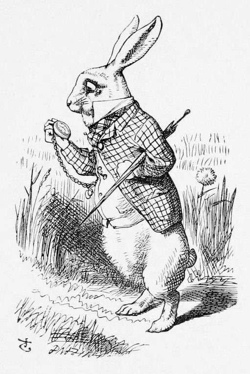
たいして目を引くようなところもないから、アリスにしてもさほどとんでもないとも感じないまま、聞こえてくるウサギのひとりごと。「およよ！ およよ！ ちこくでおじゃる！」（あとになって思い返すと、ここでふしぎがってしかるべきという気もするけど、そのときはみんな自然きわまると思えてね）その次にウサギがチョッキのぽっけから時計を取り出し、まじまじしてからかけ出したから、アリスもとびあがる、だってむねがはっとした、これまでそんなウサギ見たことない、チョッキにぽっけがあったり、時計を取り出したり、そこでわくわく気になる、野原を走って追っていくと、さいわいちょうど目の前でそいつはかき根の下、大きなウサギ穴にぴょんと入って。
たちまち飛びこみアリスは後を追う、またもどってこられるかなんて、ちっとも考えもせずに。
そのウサギ穴はまっすぐ続いて、まるでどこかトンネルみたい、そのあといきなり下り坂、いきなりすぎてふみとどまろうと思うまもなく気づいたらかなり深いふきぬけみたいなところに落っこちていて。
穴がすごく深いのか、落ちるのがすごくゆるやかなのか、どうにもひまがありすぎて、落ちるあいだにあたりは見られる、次にはどうなるのって思いもできる。まず下を見てみると、ゆく先はわかるけれども、暗すぎて何がなんだか。そのあと穴のぐるりを見ると、目にとまるのはぎっしりならんだ戸だなに本だな。あちらこちらに見える画びょうでとまった地図に絵。通りがかりにたなのひとつからびんを取り下ろすと、〈オレンジ・マーマレード〉とはられてあるのに、とてもがっかり、中身はから。とはいえ、びんを放るのはしのびない、だって下のだれかが死ぬといけないから、うまく戸だなのひとつへ通りすがりに置いておいた。
「ふふ！」とアリスは考えごと。「こうやって落ちておけば、もう
ひゅうん、うん、うん。いつになったら落ちきるのかな。「これまでのところで、どれくらい落ちたのかしら。」と声に出してみる。「地球のまんなかあたりには来てるはずね。ええと、６４００キロの深さだったかしら――」（だって、ほら、アリスはお
やがてまた始めて。「まさかこのまま地球をまっすぐつきぬけて？ 面白いっ、行きつく先の方々は頭を下にして歩いてるってわけね！ たんはい人ね、たぶん――」（聞いてる人がいなくてちょうどよかったかも、このとき、言葉づかいがまちがっていたからね）「――でもちゃんとお国のお名前何ですかっておうかがいしないと、ねえ。どうも、おくさま、ここはニュージーランド、それともオーストラリア？」（と言いながら左足を引いてひざを曲げようとしたんだけど――空中でこんなふうにスカートつまむところ思いえがける？ できると思う？）「そうしたら物をたずねたあたくしが、なんて物知らずの小娘って思われてよ！ だめ、聞けない。でももしかしたらどこかに書いてあるのが見つかるかも。」
ぴゅうん、うん、うん。ほかにやることもなくて、またすぐにアリスはしゃべりだす。「ダイナ、あたくしがいなくて、
アリスにけがはちっともなくて、ぴょいとすぐさままっすぐ立てる。見上げてみても、頭の上はまっくらやみ。前にはまた長い道があって、白ウサギがまだ見えるところにいて、かけ足で進んでいく。ぐずぐずしてるひまなんてない。走り出すアリスは風のよう、ちょうどぎりぎり向こうが角を曲がるところでこんな声が。「おおぴょんぬるかな、もう大ちこくでおじゃる！」すぐあとに続いてこっちも角を回ったはずなのに、ウサギのすがたはもうあたりになくて。気づけば天井低めの大広間、その天井からずらりとぶらさがったランプで照らされてて。
まわりにぐるりとドアがならんでいたのに、どれもみんな
するとそこでふと出くわした３本足の小さなテーブル、ぜんぶまるまるガラスでできていて、なんとその上にはただひとつ、ちっちゃな金の鍵、そこでアリスがまずひらめいたのが、この広間のドアのどれかに合うんじゃないかってこと。なのに何たること！ 穴が大きすぎるか鍵が小さすぎるか、とにかく何にも開かない。ところがもう１度回ってみると、前には気付かなかったけれど、ちんまりカーテンのかかっているところにばったり、そのうらには高さ４０センチくらいのドアが。で、ちっちゃな金の鍵で合わないか試してみると、とってもうれしいことにぴったり！
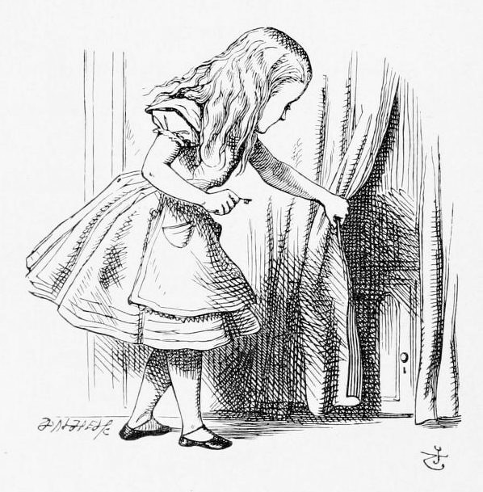
アリスがドアを開けるとネズミ穴と同じくらいの小さな通り口が続いていて、しゃがんでのぞいてみると、向こうには見たこともないきれいなお庭が。もうその暗い広間から飛び出して、明るいお花畑とひんやり
ドアの前でぼーとしててもしかたないみたいだから、テーブルのところに引き返して、もうひとつ鍵でも、いやせめて身体のたたみ方の本でも見つからないかなと思ってたんだけど、今度見るとテーブルには小びんが（「さっきまでぜったいなかったのに」ってアリスは言って）びんの首にはくるっと紙切れ、そこに〈ノンデ〉って文字がカタカナできれいに
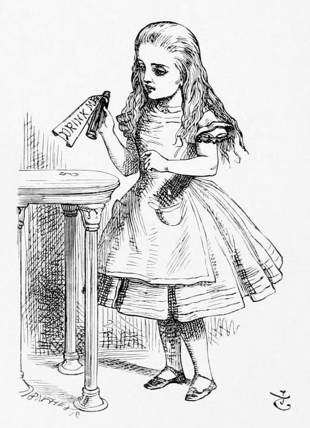
「ノンデ」っていうのはたいへんけっこう、でもお利口さんのアリスはあわててそんなことしたりしません。「だめ、まずたしかめること。」って言う、「そのびんに〈毒〉の
とはいえ、このびんには〈毒〉の印はなかったので、アリスが思い切って味見してみると、とってもおいしくて（なんと風味はサクランボのタルトにカスタード、パイナップルからローストチキンとキャラメル、あつあつのバタートーストまでがいっしょになったみたいで）あっというまに飲みきっちゃった。
＊ ＊ ＊ ＊
＊ ＊ ＊
＊ ＊ ＊ ＊
「とってもへんてこな気持ち！」とアリス。「望遠鏡みたく身体がたたまれてるのね。」＊ ＊ ＊
＊ ＊ ＊ ＊
うん、その通り。今や
しばらくして、もう何も起こらないってわかったから、すぐにでもお庭へ出ることにしたんだ。でも、あああかわいそうにアリス！ ドアのところで、ちっちゃな金の鍵をわすれたことに気がついて、取ろうとテーブルに引き返してみると、今度は上にぜんぜんとどかない。ガラスの向こうにもうはっきりと見えるのに、せいいっぱいテーブルの足からのぼろうとしても、すべるすべる。しまいにはくたびれて、かわいそうにかわい子ちゃんはへたりこんで大泣き。
「ほら、そんなふうに泣いたってどうしようもなくてよ！」とアリスは自分に言い聞かせる。「あなた、今すぐにおやめなさい！」いつもご自分へのおいさめはとてもご
ふと目を落とすと、テーブルの下に置かれたガラスの小箱。開けると中に小ぶりの
ちょびっとかじって、そわそわとひとりごと。「どちらの方？ どちらなの？」とどっちになるかわかるように、頭のてっぺんを手でおさえていたらびっくりびっくり、気づくと同じ背たけのまま。たしかに、焼菓子を食べただけじゃ、こういうふうになるのがふつうなんだけど、アリスはとんでもないことが起こるってほんとにそれだけを考えるようになってたから、まっとうな人生ががすごくつまらなくばかげたことに思えてね。
だからむきになって、たちまちぺろりと焼菓子をたいらげたんだ。
＊ ＊ ＊ ＊
＊ ＊ ＊
＊ ＊ ＊ ＊
［＃改ページ］＊ ＊ ＊
＊ ＊ ＊ ＊
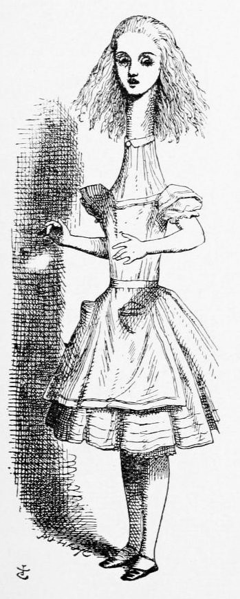
「てんへこりん、てんへこりん！」と声をあげるアリス（もうびっくりのあまり、
頭のなかであれこれ、どうしようかとめぐらせ続けてね。「ひとに運んでもらわないと。」と考えて、「って、もうふきだしそう、自分のあんよにプレゼントだなんて！ あて名だっておかしなものになってよ！
だんろ前の
しきものにお住まいの
アリスの右足さまへ
アリスから愛 をこめて
まったく！ あたくしの話もすっからかんね！」しきものにお住まいの
アリスの右足さまへ
アリスから
ちょうどそこで、頭が広間の天井にごつん。なんとただいま背たけは２メートル７５をややこえたあたり、たちまちちっちゃな金の鍵を取り上げて、お庭のドアへあわてて向かう。
ふびんなアリス！ がんばってもできるのは、横向きにねそべって片目でお庭をのぞくだけ、向こうへ行く望みなんて、これまで以上にありえない。へたりこんでまた大泣きのはじまり。
「あなた
しばらくして聞こえてくる遠くのぱたぱたという足音、あわててなみだをぬぐって近づくものに目をやると、そう、あの白ウサギがまた帰ってきたんだ、おめかしして、白ヤギの手ぶくろを片手に、大きなせんすをもう片手に持っていてね。大わらわでどたばたやってきて、ぶつぶつ言いながらこっちへ来るんだ。「およよ！
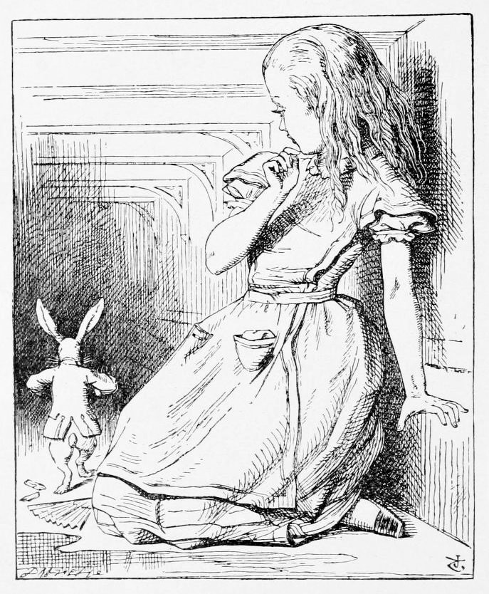
せんすと手ぶくろを拾い上げたアリス、その部屋が暑苦しいので、ずーっと自分をあおぎながらひとりごとの続き――「もう、もう！ 今日はけったいなことばかり！ でも昨日はずっといつも通りだったのに。もしや夜中のうちにあたくしの身に何か。待って。今朝起きたときのあたくしはちゃんとあたくし？ どうも少しちがっていた気がしないでもなくてよ。でもあたくしでないのなら気になるのは、『今のあたくしはいったいどなた』ってこと。んもう、まったくややこしい！」そこで同い年の知り合いの子のことをみんな思いうかべていって、自分がそのうちのだれかになっていないかたしかめたんだ。
「あたくしがエイダでないことはたしかね。」とつぶやく。「だってあの子の
びっくりだ わあにさん
しっぽがね ぴかーん
ナイルがわ ざあぶざぶ
うろこにね びしゃーん！
キバだして にいんやり
ツメひろげ じゃきーん
おいでませ さかなちゃん
にこにこ……がぶりっ！
しっぽがね ぴかーん
ナイルがわ ざあぶざぶ
うろこにね びしゃーん！
キバだして にいんやり
ツメひろげ じゃきーん
おいでませ さかなちゃん
にこにこ……がぶりっ！
「ぜんぜん歌詞がちがってよ。」とかわいそうにアリスはまた目になみだをいっぱいにためながら、言葉を続けた。「やっぱりあたくしメイベルにちがいないのね、だったらあたくしあのせせこましい小屋にうつり住まなきゃいけないことになって、しかも遊ぶおもちゃもろくにないの、うわあん！ お勉強も山もりよ！ いやあ！ あたくし心に決めた、あたくしがメイベルなら、ここでじっとしててやるんだから！ どなたかがのぞいて『お上がりなさい！』なんて言ってもむだなんだから！ あたくし上目で申しあげてよ、『ところであたくし何者？ まずそれにお答えになって。それから、それがあたくしのなりたい方なら上がりますけど、ちがうようでしたらほかのどなたかになるまで、ここでじっとしております。』――でも、ああもう！」とアリスはいきなりわっと泣き出して、「そののぞいてくれるどなたかが、いてくださったらどんなにいいか！ もうもううんざりよ、こんなところでひとりぼっちだなんて！」
こう言いつつ自分の手に目を落としてみるとびっくり、見るとしゃべっているあいだにウサギさんの白手ぶくろをはめていたんだ。「どうしてこんなことができてるの？」と思ってね、「また小さくなってるにちがいないわ。」起きあがってテーブルまで行ってそれで背たけをはかってみると、だいたいしかわからないながらも、今はおよそ６０センチで、大いそぎでちぢみつつあってね。わけはすぐにわかった、持っているせんすのせいなんだ。あわてて手放すと、まさにそのときからちぢみはすっかりおさまって。
「まったく、命からがらね！」と言うアリスはいきなり変わったことにびくびくものだったんだけど、自分がまだちゃんとあるってわかってほっとしてね。「さて今こそお庭よ！」といちもくさんにあの小さなドアへもどったんだけど、なのに、ああ！ 小さなドアはまたしまっていて、ちっちゃな金の鍵も前と同じでガラスのテーブルの上、だから「もう今までで最悪」とかわいそうにその子は思うしかない。「だってこんなちっちゃくなったの初めてなのよ、初めて！ 正直ひどすぎてよ、ひどすぎ！」
と口に出したとたん、足をすべらせ、たちまちぼちゃん！ しょっぱい水に首までつかって。初めのうちは海か何かに落ちたと思ってね。「たしかこういう場合は、線路から引き返せばよくてよ。」とひとりごと。（アリスは生まれてこのかた１度だけ海辺に行ったことがあったから、ふつうにこう考えたんだ。イギリスでは海に行くと、かならず砂はまにたくさん
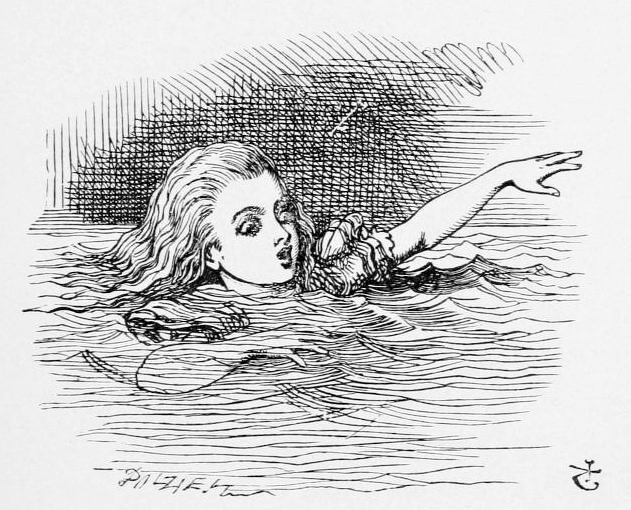
「あんなに泣くんじゃなかった！」と言いながらアリスは水をかいて前に進もうとしてね。「
ふとそのときすぐそばあたりで何かがばしゃんと池に落ちる音、水をかいて近くで見きわめようとする。とりあえずセイウチかカバかと思ったものの、今の自分がとっても小さいことを思い出して、たちまちはっとした、ただのハツカネズミが自分と同じようにすべり落ちただけだって。
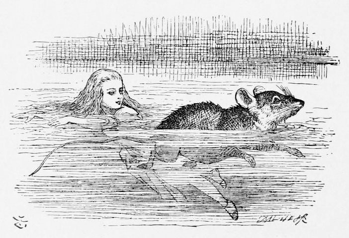
「このネズミに声をかけて、」とアリスは考えごと。「何かになって？ ここへ落ちてきてからというもの、もうとんでもないことだらけなんだから、どうもあれも話せそうな気がしてよ。とりあえずだめもとでやってみようかしら。」で、やってみた。「そこなネズミよ、ごぞんじ？ この池の出口。このあたりを泳ぎまわってへとへとなの、そこなネズミよ！」（アリスにはネズミにちゃんと正しく呼びかけなきゃいけないという頭があったので、１度もそんなことしたことなかったけど、そういえばお兄さんの古文の学習帳にあってね、『ネズミが――ネズミの――ネズミに――ネズミを――ネズミよ！』って。）そのネズミはどこか問いたげにその子を見つめて、小さなひとみで目くばせしてくれたみたいなんだけど、一言もなくって。
「こっちの言葉がわからないのかも。」とアリスは考えごと。「たぶん外国ネズミなのね、ウィリアムせいふく王についてわたってきた。」（その子の知ってるかぎりでは、何年前に何が起こったのかはうろ覚えだから、こんなことに。）で、またやってみる。「
「お好きでねえよ！」とネズミのかん高く気持ちのこもった声。「こっちの身になりゃわかんだろ！」
「ええ、おっしゃる通りね。」とアリスの声は相手をなだめるよう。「そうお
「やりとりだと？」と声をはるネズミは、しっぽの先までふるえていてね、「こっちが話に乗ったみてえな言いぐさじゃねえか！ うちは代々ずうっとネコが大きれえなんだ、いじわるで下品な
「いたしませんとも！」とアリスはあわてて話の中身を変えようとする。「あなた――あなた、あれはお好き――その――犬は？」ネズミの返事がないので、アリスはこれはいいと続けてね、「お屋敷のそばのかわいい子犬、この子をお引き合わせしたくてよ！ すんだ目のちっちゃなテリアで、ほら、あるのよ！ もう長々とした茶色の巻き毛！ それに物を投げるとひろってくるの、あとちんちんしてごはんをおねだりしたり、もう色々――半分も思い出せなくてよ――そう、かい主は地主さんで、ほらお話でははたらき者で、
それで後ろからやさしく声をかけたんだ、「ネズミさん！ おもどりになって、犬ネコどっちのお話もしないから、お好きでないなら！」するとそれを聞いたネズミは、くるっと回ってゆるゆる泳ぎもどってくる。顔は真っ青（
そろそろいい
［＃改ページ］
なんともけったいな絵づらのご一行がほとりにお集まり――羽を引きずった鳥さんたちに、毛がぴたーとなったむくじゃらたち、みんなずぶぬれで気持ち悪くていやな気分。
さてここで考えるべきは、どうやってぱさぱさにするか。かわかし方を話し合ううち、ものの数分するとけっこうなじんできたというか、気づいたらみんなと仲良くお話ししていて、生まれたときからの知り合いみたくなっていてね。なるほどインコとは長々言い争ったものだから、しまいにはむすっとされたんだけど、ここで「わたしの方がお姉さんなの、だからモノをもっとわかってるに決まってる」なんて言われようものなら、アリスだって相手のお年を知らないからそんなのうなづけないし、インコも自分からぜったいお年を口にしたくないので、どっちもあとはもう言えない。
とうとうハツカネズミが、そこそこひとかどのものみたいだってことで、よびかけてね、「すわれや、みなのしゅう、よおく聞け！ おれがすぐにでもお前らをぱっさぱさってほどにしてやる！」すぐさまみんなは大きく輪になってこしを下ろして、ネズミがどまんなか。アリスは気になるとばかりに目をネズミにじいっと、だっていますぐにでもかわかさないと、ひどい
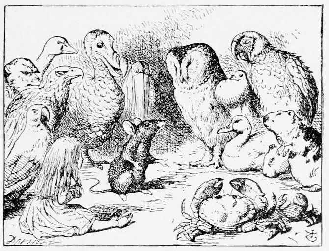
「おほん！」とネズミはもったいつけた感じで、「みなのしゅう、いいか？ こいつは知るかぎりいっとうぱっさぱさのやつよ。どうかごせいちょうを！『ウィリアム
「うげ！」とインコは身ぶるい。
「ごめんなすって！」とネズミは顔をしかめながらも、それでいてていねい。「あんた声あげたか？」
「いえいえ！」とあわてるインコ。
「そうかあ？」とネズミ。「まあ続きよ。『エドウィンとモーカー、つまりマーシアとノーサンブリアの主さまも、味方するとした。スティガンド、国うれうカンタベリ大司教までもが
「何と見たって？」とアヒル。
「だと見た。」とネズミはちょっとむすっと答える。「もちろん『だ』の意味はわかんな。」
「『だ』くらいちゃんとわかっとるわい。モノを見つけりゃあ。」とアヒルは言う。「カエルだ、ミミズだ、ってな。聞きたいのは、大司教が『何』を見たのかだ。」
ネズミは聞かれたことにぴんと来なかったけれども、あわてて続けてね。「『得策だと見たのが、エドガー親王連れてウィリアムに
「まだびしょびしょ。」とアリスはしょんぼり、「ぜんぜんぱさぱさにならなくってよ。」
「ならば、」とドードーが立ち上がり大まじめに、「集まりの休会を
「国語をしゃべって！」と子ワシ。「そんな長っがーい言葉、半分も意味がわかんないし、どころか君だってさっぱりわかってないじゃない！」ここで子ワシ、うつむいて、にやけた顔をかくしてね。ほかの鳥さんもちらほら聞こえよがしにしのび笑い。
「言おうとしたことはただ、」とドードーは気をそこねてね、「ぱっさぱさにするのなら、いちばんいいのはドードーめぐりということなのだ。」
「なに、ドードーめぐりって。」と言うアリス。すごく知りたいというわけではなく、ドードーがだれか合いの手を入れよとばかりに間を取っていたのにだれひとりとして口をあけようとはしないようだったからね。
「ふむ、」とドードー、「やってみればいちばんよくわかろうて。」（まあ、冬の日なんかにやってみたくなるかもしれないし、ここでドードーが取りしきったことを教えておくね。）
まずは走るコースを作る、形は丸（「きっちりした丸でなくてもいい」とドードー）、それでやる人はコースのあっちこっちでいいからつく。「いちについて、よーい、どん！」っていうのもなくて、みんな好きなときに走り出して、好きなときにやめる。だからいつ終わるのかもわかりづらい。それでも半時間くらい続けると、またかなりぱっさぱさになってきて、そこでいきなりドードーが大声で、「そこまで！」みんなもまわりに集まって、ぜえはあたずねる。「で、だれの勝ち？」
この問いかけには、ドードーもものすごく考えないと答えが出てこなくてね、しばらくすわりこんで、ひたいに指１本当ててね（ほらシェイクスピアが絵のなかでいつもやってるあの
「でも、ごほうびをあたえる役はだれが？」と、みんなの口がそろう。
「ふむ、むろん、あの子よ。」とドードーはアリスを指さしてね、するとやってた連中がわーっとまわりにむらがってきて、もう口々にわめくんだ、「ごほうび！ ごほうび！」
アリスはどうしてよいやらさっぱりで、しょうがないからポケットに手をつっこんで、ドライフルーツの箱を取り出してね（うまいこと
「でもあの子にもごほうびをやらねえとな。」とネズミ。
「むろん、」とドードーの答えはやっぱり大げさ。「まだ何かそなたのポケットにはあろう？」と続けてアリスを見る。
「指ぬきだけです。」と悲しげなアリス。
「こっちへかしなされ。」とドードー。
で、みんなはふたたびまわりに集まって、そんななかでドードーはぎょうぎょうしく指ぬきをさしだして、こんな言葉。「この見事なる指ぬきをわれらからあなたさまに進ぜよう。」と、この短い
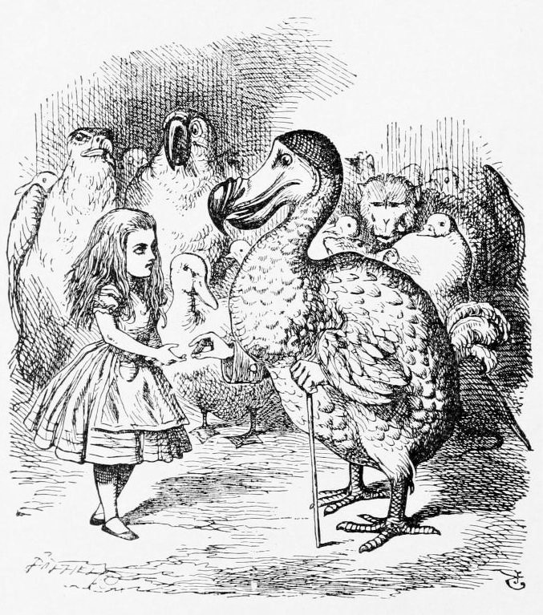
アリスには何から何までむちゃくちゃだと思えたけど、みんなまじめな顔をするもんだから、ふき出すわけにもいかなくて、でも何も言うことが思いつかないから、とりあえずおじぎをして、指ぬきを受け取って、できるだけぎょうぎょうしい顔をする。
続いてお次は、ドライフルーツを食べるだんなんだけど、これがしっちゃかめっちゃかなさわぎになってね、大きな鳥はすぐなくなるとぶつくさ言うし、小さいのはのどにつかえて
「だん取りでは、ご自分のむかっ話でしたかしら。」とアリス、「その、なぜおきらいなのか――ネ、とイ、が。」
「おれのは、長々しっぽりよ！」とネズミはアリスの方を向いてため息。
「長々のおしっぽ、ほんっとに。」とアリスはきらきらした目をネズミのしっぽに下ろしてね、「でも、後ろの〈りよ〉って何のこと？」そうしてそのことになやんだまま、ネズミも話していったから、だからお話も頭のなかではこんな感じになっちゃって……
「イカリーわ
んわんネズ
ミにいちゃ
もん、『出る
とこ出よう
ぜ、うった
えてやる――
さあ、し
のごの言
うなよ。は
っきりと
おさば
きよ。
今朝は
まあそ
れだけ
にしとい
てやる。』
犬ころ
に言う
ネズミ、
『そんな
のいやだ
よ、きみ、
いったい
だれがさ
ばくの、
ただの時
間のむだ
じゃない。』
『さばくの
はやっぱ
り、おれ
だろ。』
と
うら
かく
犬
ころ。
『はん
けつは
出た
ぞ、
言い
わた
す、
お前
は
死けい。』」
んわんネズ
ミにいちゃ
もん、『出る
とこ出よう
ぜ、うった
えてやる――
さあ、し
のごの言
うなよ。は
っきりと
おさば
きよ。
今朝は
まあそ
れだけ
にしとい
てやる。』
犬ころ
に言う
ネズミ、
『そんな
のいやだ
よ、きみ、
いったい
だれがさ
ばくの、
ただの時
間のむだ
じゃない。』
『さばくの
はやっぱ
り、おれ
だろ。』
と
うら
かく
犬
ころ。
『はん
けつは
出た
ぞ、
言い
わた
す、
お前
は
死けい。』」
「耳かっぽじってねえな！」とネズミはアリスにびしっと。「何考えてんだ？」
「ごめんあそばせ。」とおそれいるアリス。「５つめの曲がり角にいらしたところ、よね？」
「わっからんな！」と声をあげるネズミは、とげとげぷんすか。
「あ、からんだ？」と言うアリス、いつでも人の役に立ちたいざかりなので、目をかがやかせてきょろきょろしてね、「まあ、でしたらほどかせていただけて？」
「そんなこと何も言わねえよ！」とネズミは立ち上がって、「そんなすっからかんの話でバカにされるなんざ！」
「思いちがいよ！」とアリスは苦しまぎれの言いわけ。「でもあなただってずいぶんいらちだこと。」
ネズミの返事はただうなり声だけ。
「さっさとお話の続きをしめてくださる？」とアリスが
「ざんねん、お去りだなんて！」とインコがため息ついたのは、見えなくなってすぐのこと。そしておばさんガニはついでとばかりにむすめに小言。「ほらね！ つまり、あなたもかっかしちゃダメってことなのよ！」
「ママはだまってて！」と子ガニはややつっけんどん。「がまん強いカキだってどうにかなりそうよ！」
「ここにうちのダイナちゃんがいたらな、できるのに！」とアリスの大声は特にだれに向けてというわけでもなく。「あの子ならあいつをたちまち連れもどしてきてよ！」
「そのダイナってどなた？ よろしければ教えてくださらない？」とインコ。
アリスは乗り気のお返事、だっていつでも自分のペットのお話をしたいざかり、「ダイナはうちのネコ。ネズミ取りにかけてはもう一流なの、おわかり？ それにああ！ 鳥を追いかけるあの子をお見せできれば！ もう、小鳥なんかねらいをつけたとたんにがぶりよ！」
こんな話をしては、一同大さわぎになるわけで――たちまちにげまどう鳥もいたほど、おじさんカササギなんかそうろっと身じたくを始めてこう口に出してね、「そろそろうちに帰らねばな、夜風はのどをいためるので。」それからカナリアは声をふるわせながら子どもたちによびかけてね、「行きましょうさあ！ もうみんなおねんねする時間よ！」いろいろ言いわけを作って去っていくみんな、アリスはたちまちひとりぼっち。
「あたくしとしたことがダイナのことを言い出すなんて！」としょんぼりひとりごと。「だれもお好きでないみたい、こちらでは。ぜったい世界一のネコなのに！ ああ、ダイナちゃん！ またちゃんと会えたりするのかしら！」と、ここでかわいそうで、アリスはまた大泣きのはじまり、だって心がとってもせつなくて、しょげていたからね。ところが少しすると、また耳に、かすかにぱたぱたという足音が遠くから聞こえてきたから、はっとして目を上げてね、どこかで思ってたんだ、ネズミが気を
［＃改ページ］
なんと白ウサギがとろとろと引き返してきたわけで、歩きながらあたりをきょろきょろ、なくしものでもしたみたいで。そのひとりごとが聞こえてくる。「
はやまもなくウサギに気づかれたアリスは、ちょうどあたりをさがしてうろうろしてたんだけど、もう頭ごなしに
「あたくしをメイドとかんちがいするなんて。」と走りながらひとりごと。「あたくしがだれだかわかったら、おどろいてよ！ でも今はせんすと手ぶくろを取ってきた方がよさそう――まあ、あったらの話ですけど。」と言ってるうちに目の前にこじんまりしたおうち、ドアのところにはつるつるした金ぞくの
「なんてけったいなのかしら、」とアリスはひとりごと、「ウサギのお使いだなんて！ 今度はダイナがあたくしをお使いにやるんじゃなくって？」すると、こうなるのかなって、あれやこれや思いうかんできてね、「『アリスおじょうさま、ただちにこちらへ、おさんぽのごしたくを！』『今行くから、ばあや！ でもこのネズミ穴を見はらないと、ダイナがもどってくるまで、あとネズミがにげでてこないか見ておかないと。』でもたぶん、」とアリスは続ける、「もうダイナはうちに置いとけなくなってよ、そんなことをあの子が人間に言いつけだしたら！」
このときまでになんとか入れたお部屋はこぎれいなところで、まどぎわにテーブルがひとつあり、その上には（思った通り）せんすとちっちゃい白ヤギの手ぶくろが何組か置いてあった。せんすと手ぶくろ１組を取り上げて出て行こうとしたとき、目に飛びこんできたのが、鏡わきに立てられた小びん。今度は〈ノンデ〉の
してこれその通りに、しかも思ってたよりも
なんたること！ そうは思ってももはや手おくれ！ ぐんぐん大きくなっていって、たちまちゆかにひざをつくほかなくなり、またたくまにそうするよゆうもなくなって、なんとか横になろうとしてね、ひじをドアにぶつけたり、反対のうでを頭まわりでまるめたり。まだまだ大きくなるから、最後の手として、うでの片方をまどの外へ出して、片足をえんとつのなかにつっこんで、そこでひとりごと。「もうこれでせいいっぱい、どうやっても。これからあたくしどうなるの？」
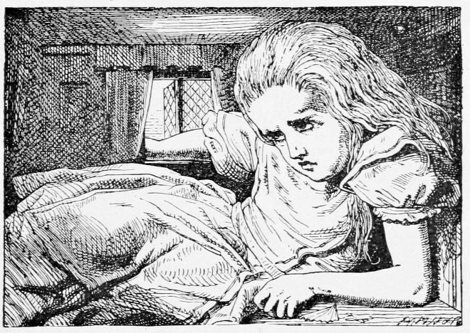
アリスにさいわい、まほうの小びんのききめはここで打ち止め、もう大きくはならない。とはいえやっぱりいごこち悪く、それにどうにも自分はこのお部屋の外に出られる見こみもなさそうで、気がふさぐのもむりはなく。
「おうちにいた方がまだいい。」とは、ふびんなアリスの想い。「ずっとのびちぢみしてばっかりとか、ネズミ・ウサギに頭ごなしってこともなくって。あのウサギ穴に入らなきゃよかった、って思う――けど――けれど――どこかへんてこ、ほら、こんな世界って。ふしぎなの、どんなことが起こってくれるのって！ いつもおとぎ話を読んでると、そんなのぜったい起こりっこないってきめつけるのに、いま、ここで、あたくしはそのまっただなか！ なら、あたくしについて書かれた本があってもよくてよ、じゃなくて？ 大きくなったら書くんだから――まあ、今だって大きいけれど、」と、いじらしい口ぶりで続けてね、「といっても、ぎゅうぎゅうでここではもう大きくなれなくてよ。」
「だとすると、」とアリスは思う。「今よりもう年は取らないってこと？ ほっとしなくはないわ――おばあちゃんにならなくていいし――でもそうなると――いつまでもお勉強の山！ えっ、そんなのぜったいいや！」
「もう、アリスのバカ！」とひとりふた役。「ここでお勉強なんて、できっこないんだから！ ね、あなただけでぎゅうぎゅうだから、ぜんぜん入らなくってよ、教科書なんか！」
というわけでそのまま、まずひとりめの役、それからもうひとり、というように、かけ合いをぜんぶひとりでやってたんだけど、何分かすると外から声がして、やめて耳をそばだてる。
「メリアン！ メリアン！」とその声。「とっとと手ぶくろを持っておじゃれ！」そのあと、
そくざにウサギはドアまで来て、開けようとしたのに、内側に
「そんなのむーりー！」と思うアリス、待ちかまえて、まどのま下にウサギの気配がしたところで、いきなり手をのばして、そのままつかむそぶり。何もつかまえられなかったけど、聞こえてくる小さなさけび声と、ずっこけてガラスをわった音。というわけで頭のなかでは、キュウリのなえ箱かそんな感じのものにつっこんだのかも、てなことに。
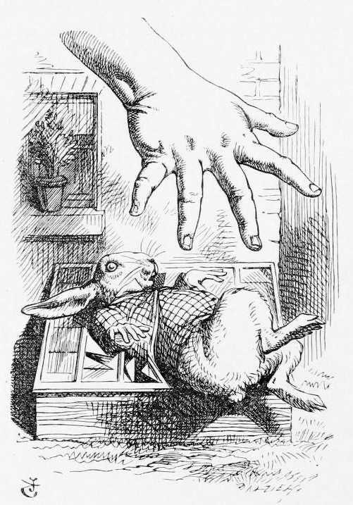
お次に来るのはぷりぷり声――ウサギのね――「パット！ パット！ どこにおじゃる！」それから今度は聞いたことのない声。「ここにおりますだ！ 土リンゴほり中で、おやかたさま！」
「土リンゴほり、ほおお！」とぷんすかウサギ。「こちへおじゃれ、ここから出すでおじゃる！」（さらにガラスのわれた音。）
「さあ教えるでおじゃる、あのまどのものは何ぞえ？」
「きっとうんでだで、おやかたさま！」（正しくは、うで、ね。）
「うで！ あほうが！ あんな大きさのがおじゃるか！ ほれ、まどわくいっぱいぞ？」
「そうでごぜえますが、おやかたさま。やっぱどう見てもうんでだで。」
「なぬ、そんなの知ったことかえ、とにかくあれめを片づけておじゃれ！」
そのあと長々と静かで、アリスにもときどきささやき声が聞こえたくらい、それも「ぜってえいやですだ、おやかたさま、めっそうもねえ！」「言うた通りにおじゃれ、へたれめ！」といったもので、とうとうもう１度手をのばしてまたつかむそぶりをするはめに。今度はふたつの小さな
しばらくじっとしているあいだ、何も聞こえなかったのだけど、ついに耳に入るごろごろ手おし車の音、たくさんの話し合うざわめき、わかった言葉は、「もうひとつハシゴがおじゃったな――なんぞ、持ってくんのひとつだけでよかったんか。ビルがもひとつ持ってて――ビル！ こっち持ってこい、おい！――ここ、この角に立てかけ――ちがう、まずふたつつなげねえと――その高さだと、まだとどかな――おお！ これでちょうどいい、やかまし言うな――ここだ、ビル！ このロープをつかめ――やねはだいじょうぶか？――気をつけろ、あのかわら、ずれて――あ、落ちてくる！ 下の、気をつけい！」（ずどーん）――「さて、だれがあれやる？――ビルじゃねえか――だれがえんとつおりるでおじゃ――やめろ、おらあいやだ！ てめえ行けよ！――んな、おらだってそんなの！ 行くべきはビルでおじゃる――おい、ビル！ おやかたさまがおおせだ、お前さんえんとつを下りてけって！」
「まあ！ ならビルがえんとつを下りなくちゃいけないってこと？」とアリスはひとりごと。「ふぅん、ぜんぶビルにおしつけたみたいね！ あたくしも、たくさんもらったってビルの代わりはおことわり。そこのだんろはたしかにせまいけど、たぶんちょっとけり上げるくらいは！」
できるだけだんろの底の方まで足を引いて、小動物の気配がするまで待ちぶせ、（相手の正体もよくわからないままに）がりっそろそろと、えんとつのなか間近あたりまで、とそのとき、「こいつがビルね」とひとりごとついでにしゅっとけり上げて、じっとして次に起こることをさぐる。
まず初めに聞こえたのが「ありゃビルだ」の大がっしょう、それからひとりウサギの声――「受け止めるでおじゃる、生けがきのそばぞ！」しーんとしたあと、また今度はざわざわあわてふためく――「あごを上だ――ブランデーを――つまらせるなよ――どういうことだ、おめえさん。何があった？
ついには、弱々しげなきぃきぃ声、（「こいつがビルね」とはアリスの考え）「んあ、よくわかんねえ――もうええ、あんがと。もうようなった――でも頭がこんがらがって何つったら――わかんのは、何かがこっちに来た、びっくり箱みてえに、んで、ぴょーんとロケット花火みてえに空へ。」
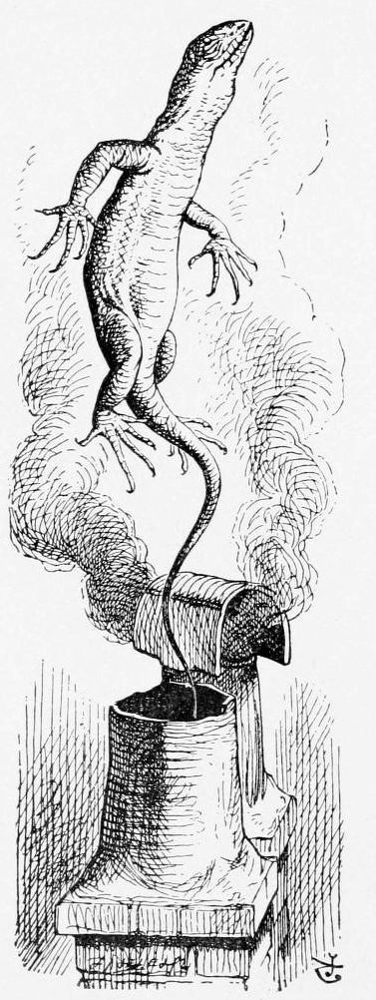
「たしかにそんなんだった、おめえさん！」と一同。
「この家を焼きはらわんとな！」とはウサギの声、そこでアリスはあらんばかりの大声でさけぶ、「やってみなさい、あなたたちにダイナをけしかけてよ！」
たちまち死んだようにしーんとなって、ひとり考えこむアリス、「次はどう出るつもりなのかしら！ まともに考えれば、屋根を外すとかだけど。」ものの数分もするとまたわたわたしだして、アリスの耳にもウサギの声が、「手おし車１台分でおじゃるな、まずは。」
「１台分の、何？」と思うアリス。でもそのなやみもすぐに晴れて、とたんに小石がたくさんぱらぱらと窓から入ってきて、いくつか顔に当たったり。「せき止めてやってよ、」とひとりごとのあと、大声でさけぶ、「またやったらしょうちしないんだから！」そうするとまたまたしーんとしずか。
アリスがはっとしてちょっとびっくり、なんとその小石、みんなゆかに落ちると小ぶりのケーキに変わってね、そこでぴんとひらめいた。「このケーキをひとつ食べたら、」と考えるアリス、「きっとあたくしの大きさも何かしら変わるはず。まあたぶん大きくはならないから、小さくなるってだんどり、かしらね。」
そこでケーキをひとつ丸飲みすると、気づけばうれしいことにいきなりちぢんでいく。ドアを通りぬけられるくらいに小さくなると、とたんにそのおうちからかけ出てね、すると見つかるのは外で立ちつくす小動物や小鳥たちのむれ。かわいそうにトカゲのビルくんはまんなかにいて、２ひきのモルモットにかかえられてて、びんから何か飲ませてもらっていたり。みんなして、アリスが出てきたのを見るなりおそいかかってきたんだけど、こっちもひっしで走ってね、たちまち気づくとぶじ深い森のなかにいて。
「第１にやるべきことは、」とアリスは森をうろうろしながらひとりごと。「また元の背たけになること、それから第２は、あのすてきなお庭へ出る道を見つけること。どうもそうしてみるのがいちばんよさそう。」
たしかに、してみるにうってつけで、すっきりわかりやすい思いつきに聞こえる。だけど、ただひとつこまったことに、とっかかりがさっぱりわからなくってね。そうして、あたりの木々のあいだをそわそわとのぞきこんでいると、ワンとほえる声が頭の上からして、それはもうびくっと顔を起こしたんだ。
１ぴきの図体のでかいワンコが、くりくり大きなお目々でこっちを見ていてね、ぷるぷると前足をのばしてさわろうとしてくる。「よしよし！」とアリスはあやす言葉のあと、口ぶえを強くふこうとしたんだけど、相手がはらぺこなのかなと気づいたらぶるぶるがとまらなくなっちゃってね、そうなってくると、いくらなだめてもやっぱりぺろり食べられちゃうわけで。
もう思わずとっさに木切れをひろい上げてワンコにつきだしてみた。するとワンコはたちまちおどりあがって、きゃんきゃんはしゃぐ、そして木切れにとびかかって、どうもじゃれたいみたいでね、そこでアリスもふみつぶされないよう、でっかいアザミのかげにひらりとよける、そして反対側から出ると、すぐさまワンコが木切れめがけてまたつっこんできたんだけど、でもつかまえようとあせるあまりすってんころりん、これはもう、考えてみれば馬車馬とふざけ合ってるみたいなものだから、アリスも足でふみつけられそうなときには、そのたびごと、はっとしてかけ足でアザミに回りこむ、だからワンコにしても小きざみに木切れへしかけるようになってね、じわじわ前につめるかと思いきや大きく後ろ、しじゅうぐるるるとほえっぱなしだったんだけど、はてにはとうとうはなれたところでへたりこんで、はあはあと口から舌を出して大きなお目々も半びらき。
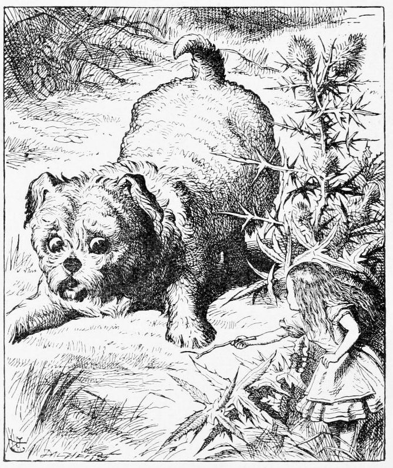
これにアリスも、にげるのは今しかないとふんで、そこですぐさま動いてかけ足、そのうちこっちもへとへとで息切れ、やがてワンコのほえる声も遠くかすかになっていってね。
「まあでも、あんなワンコ、かわいらしいものね！」とアリスはひと息つこうとキンポウゲにもたれかかり、その葉っぱであおぎながら、「芸をしこんでみるのもけっこう面白そう、その――元の背たけになったらの話だけど！ んもう！ もう少しで元通りになるのをわすれるところよ！ う〜んと――どうやればうまくいくのかしら。たぶん何かしら食べるか飲むかすればいいんだろうけど、いったいぜんたい、何を？」
その通り、いったいぜんたい、何を？ アリスがあたりをながめまわしても、草花あれど、都合よく飲み食いできそうなものはその場に何も見当たらない。ところがそばにひょっこり大きなキノコ、背たけと同じくらい。で、見上げたり、両わき、後ろに回ってみたりするうち、ふと思いつく。かさの上に何があるのか、目を向けてたしかめてみようかなって。
つまさき立ちで背のびして、キノコのへりからのぞきこむと、目にとびこんできたのが、こっちを向いた大きな青虫、てっぺんにすわりこんでうでを組み、ひそやかに水ぎせるをふかして、こちらにも何にも気にとめるそぶりがちっともない。
［＃改ページ］
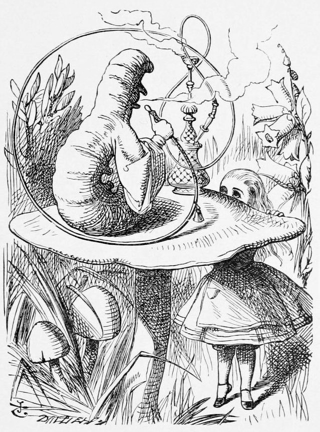
青虫とアリスはしばらくだまったまま目を合わせていたんだけど、とうとう青虫が口から水ぎせるを外して、うつらうつらけだるそうに声をかけてきた。
「だれじゃ、おぬし。」と青虫。
こんなきっかけでは話も始めづらくって。アリスもどこかもじもじしながら答えてね、「あたくし――よくわかりませんの、今のところ――少なくとも今朝起きたときにはだれだったかわかってたのに、それからあたくし、どうも何度か変わってしまったみたいで。」
「どういうことかの？」と青虫はぴしゃり。「はっきりしてくれ！」
「だからはっきりしませんの、あいにく！」とアリス。「あたくしがあたくしじゃないの、わかって？」
「わからん。」と青虫。
「あいにく、これ以上何とも言えませんの。」とていねいに受け答えするアリス。「だって自分でもよくぞんじませんし、そもそも、１日でこんな色々な背たけになれば、頭もこんがらがってよ。」
「そうでもない。」と青虫。
「ふん、きっとあなたはまだあんまりおわかりでないのね。」とアリス。「でもあなただって、いずれさなぎになって――いつの日にかほら――そのあとちょうちょに変わったりしたら、そういうのやっぱりあなたもちょっとけったいに思えるものでしてよ、そうでしょう？」
「いささかも。」と青虫。
「まあ、あなたのお気持ちはちがうかもしれませんけど、」とアリス。「少なくとも、あたくしにはとてもけったいに思えるってこと。」
「おぬしとな！」と青虫は鼻でわらいながら、「そのおぬしはだれなのじゃ。」
というわけで、また話はふりだしに。アリスは、青虫のそっけなすぎるしゃべり口にちょっといらいらしてね、そこでむねをはって、いたけだかに言う、「まずはご自分から名乗るのがすじとぞんじますけど？」
「なぜかね？」と青虫。
これはまたまたなやましくて、何の言いわけも思いつかないアリス、青虫もひどくいやな気分になっているみたいなので、そこで回れ右。
「そこへもどれ！」と青虫が後ろから声をかけてきてね。「大事なことを教えてやる！」
たしかに悪くない話に思えたから、アリスはくるっとして引き返す。
「そう
「それだけ？」とアリスは、なるだけいらいらを飲みこむ。
「いや。」と青虫。
ほかにすることもないので、とりあえず待つことにすれば、そのうちきっと向こうも耳をかせるだけのことを話してくれる、そうアリスはふんだ。しばらくのあいだ、もの言わずぷかぷかやってたんだけど、やがてうでをほどいて、ふたたび口から水ぎせるを外して、ひとこと。「自分が変わったと申すのじゃな？」
「あいにくね。」とアリス。「前できてたことが思い出せないの――それに、身体も１０分と同じ大きさを保ってられなくって！」
「思い出せぬとは、何をじゃ？」と青虫。
「その、『がんばるぞミツバチ』を歌ってみたのに、ぜんぜんちがってて！」とアリスはとってもしょんぼりした声でお返事。
「ならばどうだ、『ウィリアムじいさん』は。」と青虫。
アリスは手を組んで、歌い出す――
もう年なんだ ウィリアムじいさん
頭は白髪 だし
なのにいつでも 逆立ちばかりで――
わきまえろ
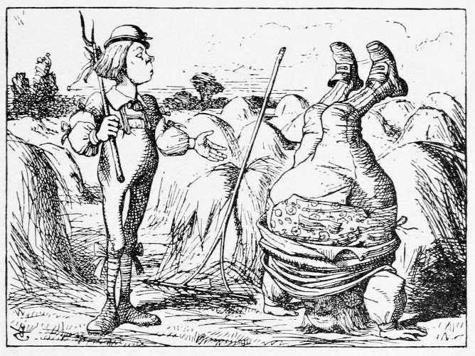
むすこに向かい じいさん言う
若さはおそれさ
自分がバカだとわかれば
あとはやるだけさ
もう年なんだ わかってくれ
それに太りすぎだ
なのに戸口で バク宙 なんてさ――
かんがえろ
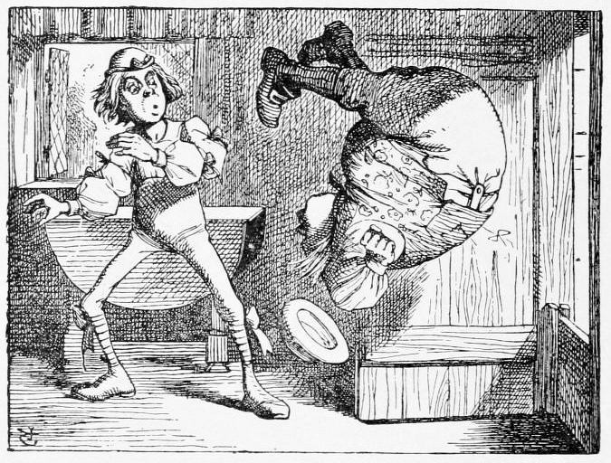
白髪 ふりわけ じいさん言う
ひと箱１シル
薬のおかげでしなやか――
どうじゃふた箱？
もう年なんだ はぐきも弱い
あぶらみでやっとだ
なのにガチョウほねごと平らげ――
なんなんだ
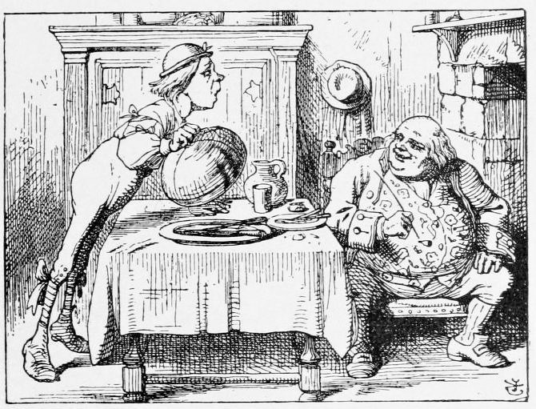
わかいころは へりくつばっか
夫婦ゲンカさ
おかげでアゴもじょうぶよ
こりゃ一生ものさ
もう年なんだ ふつうだったら
目もしょぼしょぼのはず
なのに鼻にウナギを立てて――
器用 かよ！
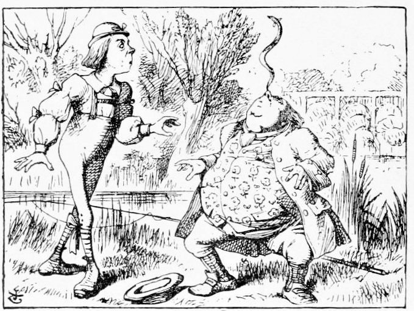
３べん言えば わかるじゃろ！
いい気になるなよ
もうたくさんじゃわい いなねば
上からけおとす！
頭は
なのにいつでも 逆立ちばかりで――
わきまえろ
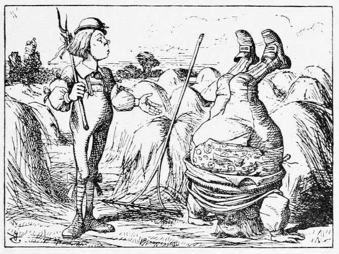
むすこに向かい じいさん言う
若さはおそれさ
自分がバカだとわかれば
あとはやるだけさ
もう年なんだ わかってくれ
それに太りすぎだ
なのに戸口で バク
かんがえろ
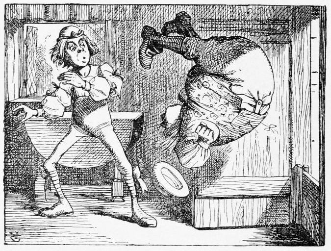
ひと箱１シル
薬のおかげでしなやか――
どうじゃふた箱？
もう年なんだ はぐきも弱い
あぶらみでやっとだ
なのにガチョウほねごと平らげ――
なんなんだ
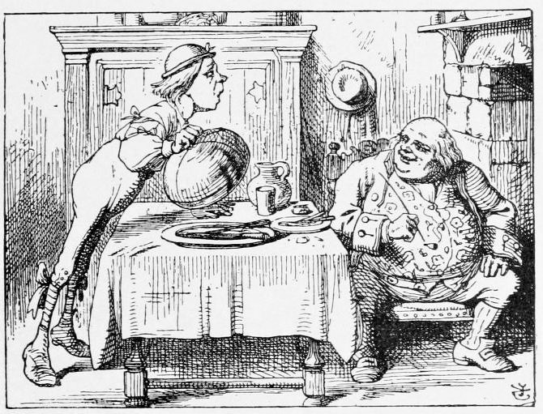
わかいころは へりくつばっか
夫婦ゲンカさ
おかげでアゴもじょうぶよ
こりゃ一生ものさ
もう年なんだ ふつうだったら
目もしょぼしょぼのはず
なのに鼻にウナギを立てて――
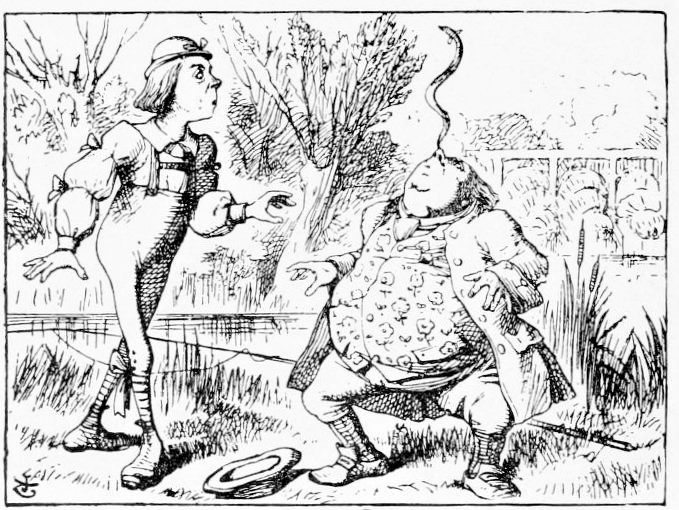
３べん言えば わかるじゃろ！
いい気になるなよ
もうたくさんじゃわい いなねば
上からけおとす！
「正しくないのう。」と青虫。
「わりとね、あいにく。」とアリスはおずおず。「ところどころちがってはいてよ。」
「初めから終わりまでまちがっておる。」と青虫はばっさり、そのあとしばし、しぃん。
先に口を開いたのは青虫。
「どれくらいの背たけになりたい？」とたずねてきてね。
「べつに、背たけにこだわりなんかなくって、」とあわててお返事するアリス、「ただ、ころころ変わるのはいただけなくてよ、やっぱり。」
「さっぱり。」と青虫。
アリスは何にも言えない。生まれてこのかたこんなにきっぱりにべもないのははじめてで、自分でもだんだんはらが立ってきてね。
「今は足りておるのか？」と青虫。
「う〜ん、もうちょっとばかり大きいほうがいただけそう、といったところね。」とアリス。「７センチの背たけって、なってみるとみじめなものよ。」
「こりゃほどよい背たけなんじゃぞ！」と
「でも、こんなのしっくりこなくてよ！」と、弱ったアリスはみじめたらしく食いさがる。そうして、こう思う、「ここの生き物、こらえしょうってもの、ないのかしら！」
「そのうちしっくりこようて。」と青虫は口に水ぎせるをくわえて、またふかし始める。
今度もアリスは、相手がまた話す気になるまでぐっとこらえてね。ものの数分すると青虫は口から水ぎせるを外して、数度あくびもして身をゆすぶって。それからキノコから下りて、草むらへとくねくねと立ち入り、去りぎわのすて言葉。「こっちがわで身体がのびる、そっちがわで身体がちぢむ。」
「こっちって何の？ そっちって何の？」とひとり思うアリス。
「キノコのじゃ。」と青虫、口に出てない言葉に返事したと思いきや、まばたきするともう目の前から消えていて。
アリスは少しのあいだキノコにうたがわしい目を向けていたんだけど、そのどっちがどっちか見さだめようおとしてね、それでまったくの丸だったものだから、これはたいへんな
「それで今のはどっちがどっち？」とひとりごと、、試しに何が起きるかなと右手のかけらをちょびっとかじってみると。またたくまもなく、いきなりアゴ下へごちんと何かがぶつかる。なんと足とごっつんこだ！
このいきなりの変わりように、たいへんおそれをなしたものの、はげしくちぢんでいくのでぐずぐずしてはいられないと思って、とっさにもうひとつのかけらを食べにかかる。アゴが足にぐっとくっついているから、口を開けるのもむりに近いのに、なんとかやりとげて、ついに左手のかけらをちょっぴり飲みこむ。
＊ ＊ ＊ ＊ ＊
＊ ＊ ＊ ＊
＊ ＊ ＊ ＊ ＊
「うん！ ようやく頭が楽になってよ！」とアリスがはしゃいだのもつかのま、すぐにうろたえだしたのは、自分の＊ ＊ ＊ ＊
＊ ＊ ＊ ＊ ＊
「あの緑のしろものは、何だっていうの？」とアリス、「それにあたくしの肩は、どこに行ってて？ それから、もう、なんてこと、あたくしの手ったら、どうやったらそんな
頭まで手を上げるのはむりそうなので、そこで頭を手のところまで下ろしてみようとしてね、しかもうれしいことに、なんと首はどの向きへもやすやすと曲げられる、ヘビみたいに。そこで首を見事にうねうねと曲げてみせ、葉っぱのなかへつっこんで初めて、自分がそれまで下でうろついていた木々のてっぺんにいるだけなんだと気づいたんだけど、せつな、しゃーっとおどかす声にさっと引っこめると。顔に飛びかかってくる大きなハト、したたかに羽を打ちつけてくる。
「ヘビめ！」とさけぶハト。
「あたくしヘビじゃなくてよ！」とアリスもぷんすか。「よして！」
「ヘビよ、やっぱり！」とくりかえすハト、でもさっきよりもいきおいがなくてね、そのあとしくしくと、「どこへ行っても！ どうしようもないのよ！」
「言ってること、ちっともぴんと来なくてよ。」とアリス。
「木の根元も行ってみた、土手にも行った、生けがきも行ってみたのに。」とハトはこっちそっちのけで続ける、「あいつらヘビが！ いつまでもあきたらない！」
ますますわからないアリスだけれど、もう口を出してもしかたないので、終わるまでそのまま。
「タマゴかえすのがそう手間じゃないっていうのかいさ、」とハト。「ましてやヘビに目を光らせなくちゃいけなくて、夜も昼もよ！ あああ、この３週間、ひとねむりもしてないっていうのに！」
「おなやみお気の毒さま。」と、アリスにも言わんとすることがわかってきた。
「だから森いちばんの高い木にのぼって、」とひきつづき声をうわずらせるハト、「やっとのがれられたと思っていたとたん、うねうね空からしつこく来るじゃないのよ！ うげっ！ ヘビ！」
「でも、あたくしヘビじゃなくてよ、だから！」とアリス。「あたくし……あたくし……」
「ふん！ 何だっていうの？」とハト。「何かごまかそうとしてんじゃないだろうね！」
「あたし――女の子だもん。」と言いつつ、どこかしっくりこないアリス、その日いく度となくのびちぢみしたのを思い出してしまってね。
「都合のいい言いのがれね！」とさげすみきったぐあいのハト。「生まれてこのかたおおぜい女の子を見てきたけれど、そんな首の長いのはひとっこひとりいなかったね！ いやいや！ あんたはヘビ、口ごたえしてもむだよ。どうせ次には、タマゴなんて味わったことないって言いくさりやがるんだろ！」
「タマゴくらい味わったことあってよ、ええ。」と言うアリスはほんとに正直もの、「でも、女の子もヘビといっしょでちゃんとタマゴを食べてよ、ほら。」
「信じられないね、」とハト、「そうだとしても、そんならやっぱり、ヘビのなかまじゃないか。それだけは言えるね。」
これにはアリスも考えがおよばず、なのでものの数分はだんまりで、それがハトにだめおしするすきをやってしまい、「あんたはタマゴをさがしてる、そんなことはお見通しなんだから。こっちからしたら、女の子だろうとヘビだろうと大してちがいないさね！」
「あたくしには大ちがいよ。」とかっとなったアリス、「それにあいにくタマゴはご入り用でないの。そうだとしても、なんでわざわざあなたのものなんか。それに
「ふん、なら、しっしっ！」とむすっとしながらハトはまた自分の巣におさまる。アリスはアリスで、木々のあいだ、なるだけ身をかがめたんだけど、首が枝にからまるばっかりなので、そのたびごとにとちゅうでほどくはめに。しばらくしてふと、キノコのかけらを手ににぎったままと思い出してね、あらためてそうろっとあつかいながら、まずはひとつをかじり、さらにもうひとつ、のびたりちぢんだりしながら、ようやくいつもの背たけにおさまることができた。
かなりひさびさ背たけが元に近くなったので、初めはとっぴに思えたけど、数分もするとしっくりきて、そしてれいのごとくひとりごとの始まり。「ふう！ これで半分はかなったわけね！ ほんとわけわかんなくてよ、ころころ変わるなんて！ 次から次へと、何になっていくのか読めないし！ とはいっても、元の背たけにもどれたんだから。お次は、あのきらびやかなお庭に入ることね――どうやってやったものかしら？」と言いながら、ふと出たのがひらけたところ、そこに１メートル２０くらいの小屋が。「どなたのおうちにしても、」と考えるアリス、「この大きさで顔を合わせるのはよした方がよさそう。だって、向こうさまこしをぬかしてしまいかねなくてよ！」そこでまた右手のかけらをかじりだして、とりあえずおうちに近づく前に自分の背たけを２３センチに落としたんだ。
［＃改ページ］
ものの数分ぼう立ちでおうちをながめて、次に何をしようかと思っているうち、ふいにお仕着せのめし使いが森から走り出てきて――（そいつをめし使いだと見たのはお仕着せすがただったからで、そうでなかったら顔だけではお魚としかわからなかっただろうね）――それからにぎった手の角っこでドアをとんとん。するとドアが開いて、お仕着せのめし使いがもうひとり、丸顔で大きなお目々でカエルみたい。さらにめし使いはふたりとも、見たところ頭に
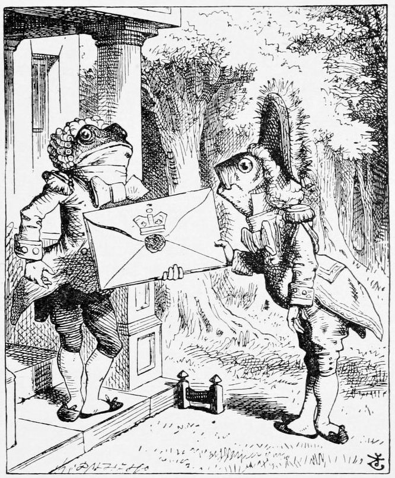
お魚めし使いがまずわきから取り出だしたるは大きなお手紙、自分の体と同じほどの大きさで、これを相手に手わたしながら大げさに言うんだ、「御前さまへ。クイーンさまよりクローケーのおさそいなり。」カエルめし使いも同じく大げさにくりかえして「クイーンさまより。御前さまへクローケーのおさそいでありますか。」
そのあとふたりとも深々おじぎをすると、まきまきカツラがからまりあう。
アリスは笑い転げてしまってね、さとられたかもと森のなかへかけもどるはめに。そうしてまた顔をのぞかせたときには、お魚めし使いはいなくなっていて、そのお相手がドアわきの地面にすわりこんで、空をぼんやり見つめていてね。
アリスはおずおずとドアのところへ行って、とんとん。
「ノックをしてもむだであります。」と言うめし使い、「そのわけはふたつ。ひとつは、わたくしめがあなたさまと同じくドアのこちらがわにおりますゆえ。もうひとつは、なかが相当さわがしいので、あなたさまがたたいても、だれにも聞こえちゃおりません。」してみるとたしかに内がわでは今もとてつもない物音がしていて――ひっきりなしにどなる声とくしゃみの音、合間にいちいちがしゃんがしゃん、まるでお皿かやかんが
「それでしたら、」とアリス、「入るにはいかがすれば？」
「そもそもノックしてしかるべきは、」とめし使いはこちらの話も聞かずに続けてね、「おたがいがドアをはさんでいればこその話。たとえばあなたさまが内がわにいて、ノックをしたなら、わたくしめは外へ出してさしあげます。」話しているあいだもずっと空を見上げていたので、アリスにはあからさまにおぎょうぎが悪く思えてね。「でももしややむをえないのかも。」とひとりごちて、「お目々がまさに頭のだいたいてっぺん。それにしても聞いたことに答えてくれてもいいんでなくて。――入るにはいかがすれば？」ともう１度大声。
「わたくしめはじっとここに、」とめし使いの言い分、「明日まで……」
そのせつな、おうちのドアが開いて、大皿がすれすれを飛んできて、めし使いの頭へまっしぐら。ちょうど鼻をかすめて、後ろの木のひとつに当たって粉々に。
「……いやその次の日まで、か。」と続けるめし使いの話しぶりは、まったく何もなかったかのよう。
「入るにはいかがすれば？」とまたたずねるアリスはさらに声をはり上げていて。
「どうしてもなかへ入るのでありますか。」とめし使い。「まずそこのところどうなんです、ほら。」
言われてみれば。ただアリスもそれだけは言われたくなくって。「なんてはしたない。」とアリスはぶつぶつひとりごと、「そろいもそろってつっかかってくる。頭がおかしくなってもよさそうなものね！」
めし使いはさきほどの言葉をくりかえすには今しかないと思ったのか、言い方を変えてね。「わたくしめはじっとここに、やすみやすみ、来る日も来る日も。」
「でもあたくしはどうすればよくて？」とアリス。
「お好きにどうぞ。」とめし使いは口笛をふきだして。
「もう、話していてもらちが開かなくてよ。」とやれやれのアリス。「まったくのうすのろね！」そうしてドアを開けてなかへお立ち入り。
ドアはそのまま台所に続いていてね、もくもくけむりがすみずみまでいっぱい。御前さまはお部屋のまんなか、３本足のいすにこしかけ、赤ちゃんをあやしている。コックが火元にぐっとよって、大きなおなべでなみなみとしたスープをまぜまぜ。
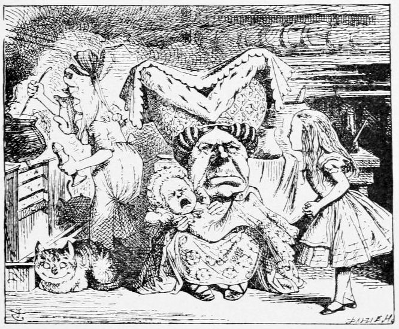
「スープにこんなにコショウ、ぜったい入れすぎ！」アリスのひとりごとも、くしゃみのせいでこれがやっと。
コショウのひどさたるや、あたりにまんえんするほど。御前さままでときおりはくしゅん、赤ちゃんはというと、ひっきりなしにかわるがわるくくしゅんおぎゃあ。台所にいてくしゃみをしていないのはただふたり、コックと図体のでかいネコ、そのネコは火元のそばに丸まって、耳にとどきそうなくらいにこにこ
「ごめんください、」とおそるおそるのアリス、そのわけはおぎょうぎとして、自分から話しかけていいものか自信がなかったから、「このネコちゃん、どうしてこんなに愛想がよろしいの？」
「こやつはチェシアのネコ、」と御前さま、「ゆえにな。ブタめ！」
しめにいきなりきつい言葉がでたので、アリスはもうとびあがってね、でもそのあとすぐ自分でなく赤ちゃんに向けたものとわかったから、気を取り直してまた話の続き。
「なるほどチェシアのネコは
「みなできおる、」と御前さま、「大半がそうしおる。」
「思いもよらなくてよ。」とアリスは取りつくろうものの、実はお話できたのがたいそううれしくって。
「そちがものを知らぬだけ、」と御前さま、「世のことわりじゃ。」
アリスもそんなふうに言われるのは気に入らなくて、何かべつの話をふった方がいいと思ってね。何かと決めかねているうちに、コックはスープのおなべを火から外すと、いきなりあたりのものを手当たり次第に御前さまと赤ちゃんに投げつけだしてね――火元の金具がまず飛んできて、そのあと続いて小なべやお大皿小皿が雨あられ。御前さまは自分に当たっても気にするそぶりさえなくって。赤ちゃんはずっとひどいくらいに泣きわめいてるから、ぶつかって
「ねえ、いいかげん気にしたらどうなの！」と声をはりあげるアリス、やきもきしてぴょんぴょん、「ほら、その子の大事なお鼻が！」そのときばかでかいシチューなべがぎりぎりのところに飛んできて、あわや鼻を持っていくところ。
「みながひとにちょっかい出さぬようになれば、」と御前さまはガラガラ声でうなってね、「世の中は今よりずいぶん早く回ろうというのに。」
「そんなことのどこがいいの。」とアリスは
「ちょっきりとな、」と御前さま、「こやつの首をちょっきりだ！」
アリスはそわそわとコックに目をやってね、そのひとがまさか言うとおりにはと様子をうかがったんだけど、コックはせわしなくスープをかきまぜるばかりで、話を聞いていたそぶりもないから、また口を開いて、「２４時間、かな？ あれ１２時間？ えーと……」
「ああ、だまらっしゃい！」と御前さま。「数字なぞいらいらする！」そうしてさらにはまた子どもをあやしだして、それらしく子守歌みたいなのをうたうんだけど、１ふしごとにきつくゆすってね――
「小さな子どもはどやしつけろ
くしゃみをしたらぶったたけ
そいつはただのいやがらせ
わかってやってる、このクソガキァ」
くしゃみをしたらぶったたけ
そいつはただのいやがらせ
わかってやってる、このクソガキァ」
コーラス
（コックと赤子がいっしょになって）
「わう！ わう！ わう！」
「わう！ わう！ わう！」
御前さまが２つめのふしをうたっているあいだなんか、赤ちゃんをあらあらしく上へ放り投げるわ、かわいそうに赤ちゃんは泣きわめくわで、アリスには
「わが家のガキにはしかりつける
くしゃみをしたらぶったたく
放っておけばそのうちに
コショウだって楽しみやがる」
くしゃみをしたらぶったたく
放っておけばそのうちに
コショウだって楽しみやがる」
コーラス
「わう！ わう！ わう！」
「ほれ！ よければちょっとあやしてみるがよい！」と御前さまはアリスに言って、しゃべりきらないうちに赤ちゃんを放り投げてくる。「わらわはそろそろクイーンさまとのクローケーのしたくじゃ。」と部屋をいそいそと出てゆく。去りぎわにコックが後ろからフライパンを投げつけたけど、ねらいは外れてね。
アリスがなんとか赤ちゃんを受け取ると、このけったいななりをした小さな生き物は手足を四方八方広げたので、「ヒトデみたい。」と思うアリス。かわいそうにこの小さいのは、受け取ったときには汽車のように鼻からぶーと湯気を出していて、やたら身をくねらせたりそりかえったりしたので、とにかくまずものの数分はかかえるだけでせいいっぱい。
ちゃんとあやすコツ（むすび目を作るみたいにねじって右の耳と左の足をぐっとおさえてほどけないようにすること）がわかるとすぐに、かかえたまま表に出てね。「あたくしがこの子を連れ出さなければ、」と思うアリス、「ものの数日できっと
赤ちゃんはまたもやブーブー、そこでアリスはいぶかしげに顔をのぞいてね、何かあったのかと思って。するとどこからどう見ても、そこにあるのはまさしく上向きの鼻、人の鼻というよりはもうブタの鼻、しかも目は赤ちゃんにしてはひどく小さくなっていて、とにかくアリスはそいつの
ない、なみだなんかちっとも。「ブタになったりしたら、まったく、」とアリスは真顔、「こんりんざいかまってあげなくてよ。めっ！」かわいそうにその小さいのはまたもや泣いて（というかブーブー、と言っていいものやら）、しばらくは何も言わずに進んでいってね。
アリスの頭にはよぎりはじめていたことがあってね、「ところでこの生き物をうちにつれかえって、あたくしはどうしようっていうのかしら。」するとそのときまたブーブーとうるさくするので、顔をのぞきこんでちょっとびっくり。今度はもう見まちがいのしようがない、どこからどこまでもまったくのブタ、そうなるともはやつれていくのもとってもばからしくなってきてね。
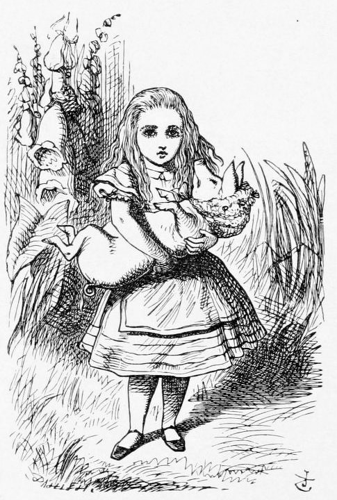
そこでその小さい生き物を下ろして見守っていると、そそくさとっとこと森へ入っていったので、すごくほっとしてね。「大きくなったら、」とひとりごと、「ものすごくぶっさいくな子になりそうだったけど、ブタならちょっとはかっこよくなる、かも。」そうして今度は自分の知り合いのなかでもブタとしてならやっていけそうな子を思いうかべながら、ひとりごとを言おうとしてね、「ちゃんと化けるやり方を知ってたなら……」とちょうどそのとき、ちょっとびくっとしてね、目の前で、チェシアネコが数メートル先の木の大枝にちょこんといたんだ。
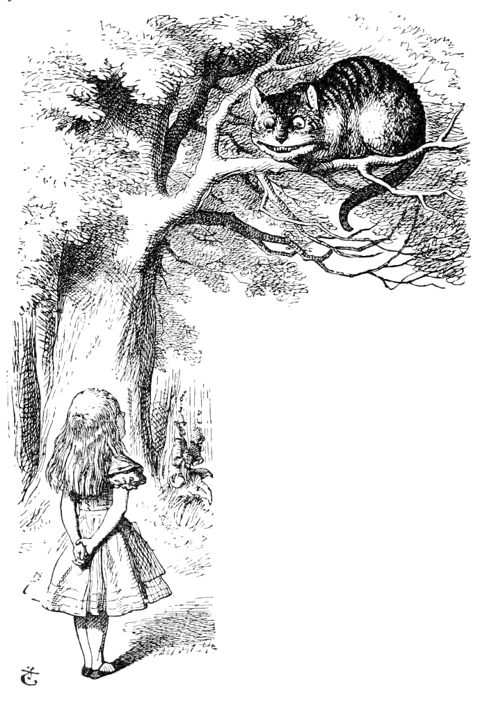
ネコは愛きょうよくにんまりするだけで、じっとアリスを見つめる。愛想のいいネコ、と思ったアリス。
しかもほんとに長いツメと、りっぱな歯がずらりとあるものだから、下手に出なければという気になってね。
「チェッシャにゃん。」とちょっぴりおずおずよびかけてね、だってそのよび方が相手のお気にめすかさっぱりわからなかったから。ところが向こうはさらにちょっとにやっとするだけ。「ふう、とりあえず気げんはいいみたい。」と思ったアリスは言葉を続けてね。「教えてくださいませんこと？ ここからどちらに行った方がよろしくて？」
「そいつはやっぱりお前の行きたいところ次第だにゃ。」とネコ。
「べつにどこでもよくてよ……」とアリス。
「にゃら、どこへにゃりとも行けばいい。」とネコ。
「……ちゃんとどこかへたどりつけるなら。」とアリスは付け足しの言いわけ。
「そりゃそにょくらいできるとも、」と言うネコ、「それにゃりに歩けば。」
アリスはたしかにもっともだと思ったので、今度はべつのことを問いかけてね。「このあたりには、どんなひとがお住み？」
「あっちの方にゃ、」とここでネコは右の肉球をぐるっとふってね、「ぼうし屋が住んでる。そんであっちの方にゃ、」と今度は左の肉球をふって、「ヤヨイウサギ。好きにゃ方に行け。どっちもおかしにゃやつだ。」
「でも、おかしなひとのところに行くのはごめんでしてよ。」と言い出すアリス。
「まあ仕方のにゃいこと。」とネコ。「ここじゃみんなおかしいにゃ。にゃあも、お前も。」
「あたくしがおかしい？ どうして？」
「そりゃそうにゃ、」とネコ、「でにゃきゃこんにゃとこに来ない。」
アリスはものも言いようだと思ったけど、とりあえず続けてね、「じゃあ、あなたがおかしいっていうのは？」
「まずもって、」とネコ、「犬はおかしくにゃい。これはいいにゃ？」
「まあそうね。」とアリス。
「にゃらわかるにゃ、」とたたみかけるネコ、「犬はおこるとうにゃって、うれしいとしっぽをふる。にゃのに、おいらはうれしいとうにゃるし、はらが立つとしっぽをふる。にゃから、おいらはおかしい。」
「それって、うなるじゃなくて、のどを鳴らすってことじゃにゃいの？」とアリス。
「どう言ってもおにゃじこと。」とネコ。「今日はクイーンとクローケーするんにゃにゃいのか？」
「ぜひやってみたくてよ。」とアリス、「でもおさそい受けてないし。」
「ではまたそこで。」と言うなりネコはぱっと消える。
アリスはこんなことにはもうわりと平気で、けったいなことが起きるのもなれっこ。それでもネコのいたところをじっと見ていたんだけど、するとまたぱっと出てきてね。
「ところで、赤んぼはどうにゃった？」とネコ。「聞くのをうっかりしてたにゃ。」
「ブタに化けてよ。」と事もなげに答えたアリスには、もうネコがもどってきたのも当たり前みたいで。
「そうにゃろうと思った。」と言ってネコはまた消える。
アリスはどうせまた出てくると思ってしばらく待ったんだけど、どうも出てこないので、ものの数分するとヤヨイウサギが住んでると言われた方へと進み出してね。「ぼうし屋は見たことあるから、」とひとりごと、「ヤヨイウサギの方がきっともっとずっと面白いはず、でもまあ今は５月だから、そこまでおかしくはないかも――少なくとも３月ほどおかしくないかな。」こう口にしながら見上げると、なんとそこにはまたネコが木の枝にちょこん。
「『ブタ』にゃっけ、『ブナ』にゃっけ？」とネコ。
「だから『ブタ』。」と答えるアリス、「あの、そんなむやみやたらにぱっと出たり消えたりしないでいただけて？ ひどくめまいがしてよ。」
「にゃるほど。」というネコ。なので今度はきわめてゆっくりと消えることにしてね、しっぽの先からじんわりと、おしまいには
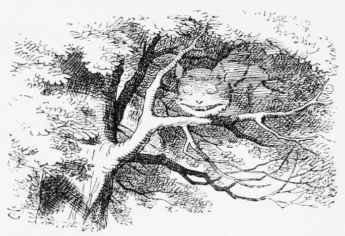
「まあ！ 愛想なしのネコならよく見るけど、」と思うアリス、「ネコなしの愛想だなんて！ 生まれてこのかたこんなへんてこなこと見たのはじめて！」
そんなに歩くわけでもなくすぐにヤヨイウサギのおうちが目に入ってくる。そのおうちにちがいないと思ったのは、えんとつが耳みたいな形で、屋根が毛なみふわふわだったから。大きなおうちだったので、はじめは近よりたくなかったけど、とうとう左手にあったキノコのかけらをもうちょっとかじって、背たけを６０センチくらいに上げてね。そのあとでも近より方はこわごわで、ひとりごと、「やっぱりめちゃくちゃおかしかったらどうしよう！ こっちじゃなくぼうし屋の方に行けばよかったかな？」
［＃改ページ］
なんとひとつのテーブルが家のまん前の木かげにもうけられてあってね、ヤヨイウサギとぼうし屋がそこでお茶のまっ
テーブルはでっかいのに、３にんはすみっこにぎゅっとより集まっていてね。「
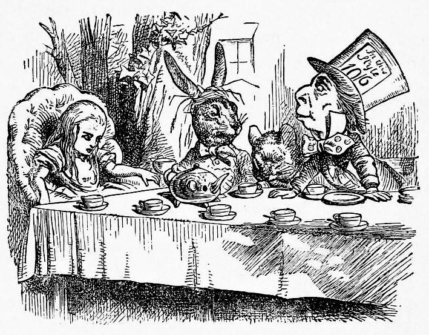
「ワインでも飲め。」と
アリスはテーブルをぐるっと見回したけど、そこにあるのはほんのお茶だけ。「どこにワインなんか。」と言い返す。
「どこにもねえ。」とヤヨイウサギ。
「とんだ
「てめえこそ無礼者だ、さそわれもしねえのに、すわりやがって。」とヤヨイウサギ。
「まさか３にんだけのテーブルだなんて。」とアリス。「空いてるところもずいぶんあるけれど。」
「かみの毛、のびすぎだな。」と言い出すぼうし屋。どうにも気になったのか、しばらくアリスを見つめていたんだけど、ようやく口から出た言葉がそれで。
「ひとに口出しするなんてダメなんだから。」とアリスはびしっと言いつけてね、「とってもぶしつけ。」
ぼうし屋はこれを耳にして目を丸くしたんだけど、口にしたのはこれだけ、「カラスとかけて
「ふぅん、ちょっと面白そうじゃない！」と思うアリス。「のぞむところよ、なぞかけなら――あれね、もうわかりそう。」とわざわざ声に出す。
「それはつまり、もう答えがわかるってえことか。」とヤヨイウサギ。
「その通り。」とアリス。
「じゃあ、わかったってことは言えるんだろうな。」とたたみかけるヤヨイウサギ。
「だから、」とアリスはあわててお返事、「そのうち――そのうち言えるってことはわかったの――同じでしてよ、ほら。」
「同じなものか！」とぼうし屋。「ならば、『食べるってことは見える』と『見えるってことは食べる』、これが同じというのかね！」
「ほかにも、」と付け加えるヤヨイウサギ、「『ものになるってことは好きだ』と『好きだってことはものになる』、これも同じか！」
「まだまだ、」と口をはさむヤマネは、ねごとでも言っているかのようで、「『ねむれるってことは息がある』と『息があるってことはねむれる』、これも同じですか？」
「おまえのはおんなじだ。」とぼうし屋、ここでおしゃべりはとぎれて、ものどもみんなしばしだんまり、そのあいだにアリスはカラスや机ののことをできるだけ思い出してみたけど、大したこともなくって。
そのだんまりをはじめにやぶったのは、ぼうし屋でね。「今日は何日かね。」とアリスの方を向く。ポケットから時計を取り出して、それをまじまじ、時おりたびたびゆすぶって、耳に当ててみたり。
アリスはちょっと考えたあと、「４日。」
「２日くるっておる！」とぼうし屋はため息。「言ったろ、時計のからくりにバターは合わんと！」とそのあと、いかりの目を向けられるヤヨイウサギ。
「最高級のバターだぜ。」と答えるヤヨイウサギはどうにも弱ごし。
「ああ、だがパンくずがまじったにちがいない、」とグチるぼうし屋、「またぞろパン切りナイフなんぞ使うからだ。」
ヤヨイウサギはその時計を取って、しぶっ面でまじまじ、そのあとカップのお茶にひたしてまたまじまじ、ところがさっきの言葉よりいい言葉が思いつかないのか、「最高級のバターだったのに、ほれ。」
アリスはなにやらわくわくしながら、かたごしにまじまじ。「面白い時計だこと！」と口に出してね。「時をつけずに日をつげるなんて！」
「何を言うか。」とこぼすぼうし屋。「きみの時計は年をつげたりせんだろ？」
「当たり前。」とアリスはにべもない。「だってそれだと１年間ずっと同じじゃないの。」
「それはこちらのとて同じこと。」とぼうし屋。
アリスはひどくもやもやした気持ちになってね、ぼうし屋の言い分は返事になってないように思えたんだけど、それでもたしかに言葉にはなっていて。「おっしゃること、よくわからないんですけど。」とできるだけていねいに言い返す。
「ヤマネがまたいねむりしておる。」と言いながらぼうし屋は、熱めのお茶を相手の鼻にかけてね。
ヤマネはしんぼうたまらんと頭をふって目も開けずに、「もちろんもちろんまさにそれを言おうとしていたんです。」
「さっきのなぞかけはもうわかったかね？」と言いつつぼうし屋はまたアリスの方を向く。
「いいえお手上げ。」というのがアリスのお返事。「答えは何？」
「これっぽちもわからん。」とぼうし屋。
「おれも。」とヤヨイウサギ。
アリスはやれやれとため息。「もっとましなことができてよ、」と言うしかない、「そんな答えのないなぞかけで時間をつぶすだなんて。」
「わがはいくらい時間どのとお近づきになれば、」とぼうし屋、「よびすてでつぶすだなんて言いはせん。どのをつけろ。」
「あなた何をおっしゃってるやらさっぱり。」とアリス。
「ああそうだろうとも！」と、ぼうし屋はさげすむようにあごを上げてね、「なんならきみは時間どのと口をきいたこともないからな！」
「まあね、」とアリスはおそるおそるお返事、「でもせわしないときには時間をさいたりしてよ。」
「おお！ だからか。」とぼうし屋。「時間どのはさかれるのがおきらいだ。なかよくなりさえすれば、時計のことはだいたいよろしくしてくださる。たとえば朝の９時だとしよう、ちょうどおけいこの始まる時間、ならばきみは時間どのにほんのちょっとささやくだけでいい、くるくると時間がまたたくまに回る！ １時半、ごちそうの時間だ！」
（「そうなりゃどんなにいいか。」とヤヨイウサギはぼそぼそひとりごと。）
「それはそれはけっこうだこと、」とアリスはあいづち、「でもそれじゃあ――おなかが空かないんじゃなくて、ほら。」
「はじめのうちは、おそらく。」とぼうし屋。「だが好きなだけ１時半にとどめおくことができる。」
「で、そうしてるのね、あなたは？」とたずねるアリス。
ぼうし屋はやるせなく首をふる。「いいや！」との答え。「先の３月にけんかをしてな……おまえがおかしくなる直前のことだ、ほれ……」（とティースプーンでヤヨイウサギを指し示してね）「……あれはハートのクイーンがもよおした大音楽会でのこと。わがはいは歌をうたう役でな。
『てかてか ひかる
やみの こうもり』
この歌は知ってるかね？」やみの こうもり』
「聞いたことあってよ、なにかそんな歌。」とアリス。
「では引き続き、ほれ、」と続けるぼうし屋、「このように――
『ひらひら とぶよ
おぼんのように
てかてか……』」
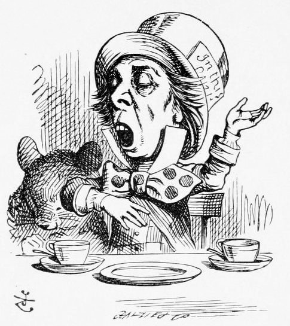おぼんのように
てかてか……』」
ここでヤマネは身をふるふる、ねむったままうたいだしてね、「てかてかてかてか……」とあまりに長々続けるので、ふたりがつねってやめさせた。
「まあこのふしをうたいきらんうちに、」とぼうし屋、「クイーンさまはどなりなさる、『時間のむだっ！ 首をちょん切れ！』」
「おそるるに足る話ね！」と声をはりあげるアリス。
「そうして時間どのをむだ死にさせて以後、」とおくやみとばかりのぼうし屋、「たのみごとを聞いてくれんようになった！ 今もずっと６時のままだ。」
ぱっとアリスの頭にひらめきが。「そのせいで、こんなにたくさんティーセットが置かれてあるのね？」とたしかめる。
「ご名答。」とため息をつくぼうし屋。「いつもお茶の時間なのだ、あいまに洗いものをする時間もない。」
「ということは、ぐるりとずれていくってわけ？」とアリス。
「さよう、」とぼうし屋、「どんどん使ってゆく。」
「でも１周しちゃったらいったいどうなるの？」とアリスはふみこんでみる。
「話を変えようや。」とわりこむヤヨイウサギ、あくびをしてね。「あきてきた。そこでどうだ、このじょうちゃんにお話をしてもらうってのは。」
「め、めっそうもなくてよ。」とアリスはいきなりの申し出にちょっとあたふた。
「ならヤマネにさせよう！」とふたりは声をはりあげる。「起きろ、ヤマネ！」そうして両がわからいきなりつねってね。
ヤマネはゆっくり目を開いて。「ねてませんよ、」と弱々かすれ声、「みんなの言うことは一言一句聞こえてましたよ。」
「話をしろ！」とヤヨイウサギ。
「ええ、よろしく！」とおねがいするアリス。
「さあさっさとしろ、」とせっつくぼうし屋、「さもないと話が終わるより先にこいつまたねてしまうぞ。」
「昔々あるところに３人のかわいい姉妹がおりました。」とヤマネは大あわてではじめてね、「名前はエルシー、レイシー、ティリー。３人は井戸の底に住んでおり……」
「食べるものはあって？」とアリスは飲み食いのことにかかってはいつもきょうみしんしん。
「シロップを食べています。」とヤマネが言えたのは、ものの数分考えた末。
「そんなの無理よ、ほら。」と言うアリスの口ぶりはやさしげ。「病気になってしまってよ。」
「だから３人は、」とヤマネ、「もちろん病気に。」
アリスはちょっと思いうかべてみてね、そんなとてつもないくらしを、でもあんまりにももやもやしてきて、そこでこう引き取る、「でも井戸の底に住んでいるのはなぜかしら？」
「もう１ぱいどうだ。」とヤヨイウサギがアリスにいう口ぶりはたいへん熱心。
「まだ何もいただいてなくてよ。」と気を悪くしたアリスが返す、「だからもう１ぱいだなんて無理。」
「では１ぱいも飲めないということか。」とぼうし屋、「ゼロ足す１で１ぱい目だからな。」
「あなたは口をはさまないで。」とアリス。
「ひとに口出ししているのは、きみではないのか！」と問いつめるぼうし屋は
アリスは何と言い返してよいのかさっぱりだったので、自分でお茶とパンを取ってから、ヤマネに向き直って、また同じおうかがい。「井戸の底に住んでいるのはなぜかしら？」
ヤマネのまたものの数分かけて考えた末に口から出た答えは、「シロップの井戸ですから。」
「そんなのありえない！」とぷんすかしだすアリスに、ぼうし屋とヤヨイウサギは「しっ、しーっ。」とやってね、むすっとしながらヤマネはこう言う、「おぎょうぎよくできないのならお話のオチは勝手にすればいいです。」
「おねがい、続けて！」ととても素直になるアリス。「もう口をはさんだりしないから。そんなのひとつくらいはあるかも。」
「ひとつも、ですと！」とヤマネはぷんすか。だけどしぶしぶ続ける。「なのでその３人の姉妹は――かきわける練習をしていました、ほら……」
「かきわけるって何を？」とアリスはさっきの
「シロップです。」と今度のヤマネはちっとも考えずにお答え。
「きれいなカップがほしい。」とぼうし屋が口をはさむ。「さあ、みなのもの、席をひとつずらそう。」
言いながら席をずらして、それにヤマネも続いてね、ヤヨイウサギはヤマネのいたところに、そしてアリスもしぶしぶヤヨイウサギのすわっていた席へ。席がえで得したのはぼうし屋ただひとり。そしてアリスは前よりかなり悪くなったのだけど、それというのもヤヨイウサギがさっきミルク入れをお皿にひっくり返していたから。
アリスはもうヤマネをおこらせたくなかったので、おそるおそる切り出した。「でもわからなくてよ。井戸でどうシロップをかきわけるの？」
「プールでなら水をかきわける。」とぼうし屋。「シロップの井戸ならシロップをかきわける――当たり前だ、バカ者。」
「でも底はせまくってよ。」とヤマネにたずねるアリス、終わりの言葉は聞かんぷり。
「もちろんせまい。」とヤマネ。「だからそこそこに。」
かわいそうにこのお答えのせいでアリスの頭はハテナだらけ、なので食い下がらずにしばらくそのままヤマネに話を続けさせてね。
「３人はかきわけるおけいこ中、」と続けるヤマネはあくびをして目をこすっていてね、どんどんねむくなっていたんだ、「いろんなものをかきわけます――『お』で始まるあらゆるものをかきわけるのです……」
「どうして『お』なの？」とアリス。
「いけねえのか？」とヤヨイウサギ。
アリスはだんまり。
もうこのときヤマネは目をとじてしまっていて、うとうとしていたのに、ぼうし屋につねられ、ひゃっと小さく声を上げてまた目をぱちくり、そして話の続き。「……『お』で始まるものです。たとえば、おとりとか、お月さまとか、思い出とか、おっちょことか――ほら言うでしょ、『おっちょこちょい』って――見たことありますか、『おっちょこ』をちょいとかきわけた絵というのを。」
「そんないきなり聞かれても。」とアリスの頭はハテナだらけ、「ないと……」
「ならば口を出すでない。」とぼうし屋。
この無礼な物言いにアリスもがまんの
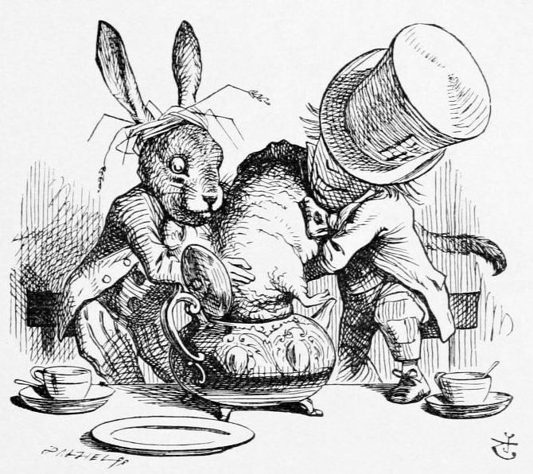
「もうこんりんざいこんなとこには来なくってよ！」とアリスは森をかきわけつき進んでいってね、「生まれてこのかたこんなバカバカしいお茶会はじめて！」
こんなことを言っているうちに、ふと目についた一本の木、そこに何やらなかへと続くドアがついていて。「まあ、へんてこりん！」とアリスは思ってね、「でも今日はみんなへんてこりん。だからいきなり入ってもたぶんまあよろしくてよ。」というわけで、なかへお立ち入り。
すると気づけばまたもや大広間、そばには小さなガラスのテーブル。「さあて今度こそうまくやってみせてよ。」とひとりごと、まずはちっちゃな金の
［＃改ページ］
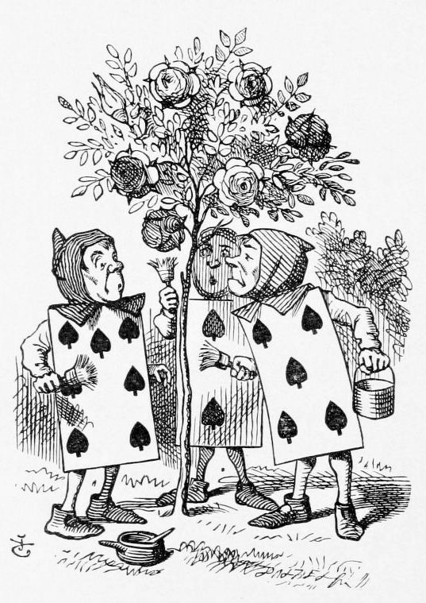
大きなバラの木が１本、庭を入ったところに立っていて、さいてるバラはどれも白なのに、その場にいた３まいの庭係が、いそいそとそいつを赤にぬっていてね。これがアリスにはすごくへんてこなことに思えたものだから、そばでじっくり見ようと足を向けると、近づくなり聞こえてくる、うちひとりの言葉、「おい気ぃつけろよ、５！ そんなふうにこっちへ絵の具をはねかけんな、こら！」
「しょうがねえだろ。」と５はむっとした声を返す、「７がこっちのひじを小づきやがった。」
それに７も見上げて口をはさむ、「やんのか、５！ いつもいつもひとのせいにしやがって！」
「てめえ言ってるばあいかよ！」と５。「聞いたぜつい昨日、クインのやつがてめえは打ち首ものだっつってな！」
「ワケは？」と口火を切ったやつ。
「てめえの知ったこっちゃねえだろ、２！」と７。
「いいや、知ったこっちゃあるんだな！」と５、「だから教えてやんよ――ワケってのはタマネギとまちがえてチューリップの根っこを料理係に持ってったってな！」
７はハケを放り出してまくし立てる、「はあ！ そんなおかどちげえ――」とここでたまたま目にうつるアリス、じーっとのぞきこんでいたから向こうはふいに言葉をつまらせてね。ほかの２まいもふり返り、みんなしてふかぶかおじぎ。
「教えていただけて？」とアリスはちょっぴりおずおず、「どうしてバラに色なんかつけてらして？」
５と７はおしだまって２をにらむだけ。そこで２が小声で、「その何だ、実はさ、ほら、じょうちゃん、本当はこいつ赤いバラの木のはずだったんだけど、手ちがいでオレら白いのを植えちまってさ、クインに見つかるはめにでもあったら、もうオレらみんなそろって首切られるってワケよ。つーわけでさ、じょうちゃん、来ないうちにやれることやっとこ――」と、まさにこのとき、庭の向こうをそわそわと見つめていた５が声をあげる、「クインのやつだ！ クインだ！」庭係の３まいはあわててぺたんとうつぶせにたおれる。おおぜいの足音にふり返ったアリスは、当のクイーンにじいっと目をそそぐ。
まずやってきたのが、こんぼうをかまえた１０まいの
アリスには、自分もその庭係３まいと同じようにひれふした方がいいのかちょっとはっきりしなかったけど、ねり歩きにそんな決まりがあるとも耳にしたこともなかったので、「それに、ねり歩きにいったい何のねうちがあって？」と思ってね、「ひれふして顔を下向きにしたら、どのみち見えないもの。」だからその場に立ったままじっとしていた。
ねり歩きはアリスのまん前まで来ると、そろって立ち止まって目を向けてくる、そこでクイーンが一言ぴしゃり、「こやつはだれよの。」たずね先はハートのジャック、だけど返ってくるのはおじぎとにこにこだけ。
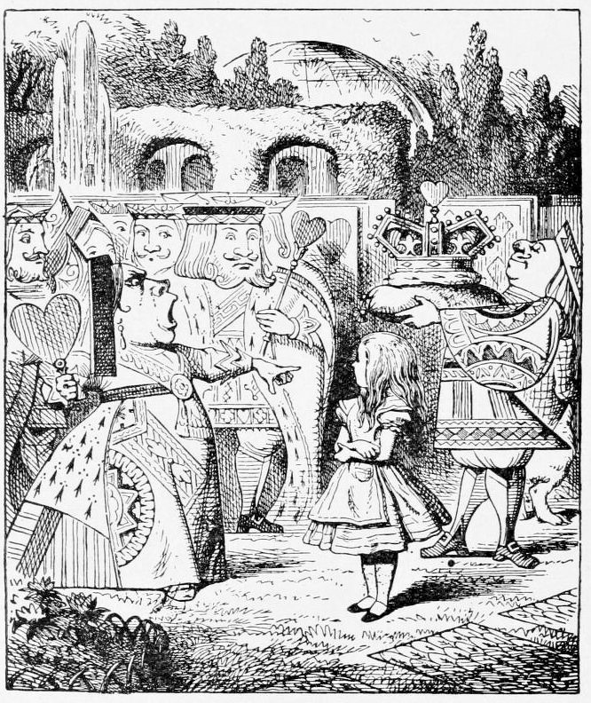
「バカ者！」とクイーンは、頭をつーんとそらして、そのあとアリスの方をむいてさらにひとこと、「そこな子ども、名は何と言う？」
「あたくしの名前はアリスです、クイーンさま。」とアリスはうやうやしく受け答え、でも実は心のなかでは、「ふん、どうせただのトランプ１組。おそるるに足らずよ！」
「ではあれは何よの。」とクイーンが指さしたのは、バラの木のまわりにたおれている３まいの庭係、だってうつぶせになっていたし、背中のがらはどのトランプもおんなじだから、そこにいるのが庭係なのか、強者、そばづかえ、はたまた自分の子どもたちなのか、さっぱりでね。
「あたくしに聞かないで。」と言うアリス、その気の強さに自分でもびっくり。「知ったこっちゃなくてよ。」
「すっからかん！」とアリスが大声で言ってのけると、クイーンは静かに。
キングがその手をクイーンのうでに置いて、おずおず言い出す、「これお前、考え直さんか。ほんの子どもだ！」
クイーンはぷいっと顔をそむけて、ジャックに言いつける、「こやつらひっくり返せ！」
ジャックは、そうろっと片足でやってのけた。
「立てい！」とクイーンがきぃきぃ大声をあげると、３まいの庭係はたちまちとび起き、おじぎを始めてね、キングにクイーン、王子王女にみなみなさまへ。
「ええいやめい！」とかなきり声のクイーン、「目が回る。」とそこでバラの木の方を向いて続ける、「ここで今まで何をしておった？」
「おそれながらクイーンさま。」とへりくだるふりして２は、しゃべるあいだ片ひざをついて、「なんとか３まいで――」
「もうわかった！」と、そのあいだにバラをたしかめていたクイーンは、「こやつらの首をちょん切れ！」そしてねり歩きは動き出し、
「打ち首なんかさせなくってよ！」って、アリスは３まいともを手近の大きな植木ばちにつっこんでね。だから３まいの強者は、ものの数分うろうろとさがしただけで、あとはみんなの後を追ってすたすたすた。
「首はのうなったかえ？」とクイーンの大声。
「みな首なしにてございまする、クイーンさま！」と強者の返事も大声。
「よろしい！」とクイーンの大声、「そちはクローケーができるか？」
おしだまった強者ども、目を向ける先はアリス、つまりどうも、聞かれてるよってことみたいで。
「はいっ！」とアリスの大声。
「ならばこちへ！」と声をひびかせるクイーン、ねり歩きの仲間になったアリスは、これから何が始まるのか気になる気になる。
「これ――よいお日がらであるな！」とわきからおずおずひと声。なんととなりを歩いていたのはあの白ウサギ、こわごわ顔をのぞかれていてね。
「本当に。」とアリス、「
「しっ！ しーっ！」とひそひそ早口で返すウサギ、話しているあいだもそわそわ後ろをふりかえりながら、やがてつま先立ちして小さく耳打ち、「御前さまは処けいを言いわたされておじゃる。」
「どうして？」とアリス。
「どうしてなかなかおいたわしやとな?!」と聞き返すウサギ。
「そうじゃなくて。」とアリス。「悲しいとかじゃなくて、わけを聞いてるの。」
「クイーンさまにびんたをはったのじゃよ――」と言い出すウサギ。アリスはぷぷっとふきだして。「これ、しーっ！」とウサギはびくびくひそひそ声。「クイーンさまに聞こえるでおじゃる！ ほれ、あの方がちょっとちこくされたもんで、クイーンさまがな――」
「ものども
アリスは思った、生まれてこのかたこんなへんてこなクローケー場見たことないって。そこらじゅうが凸凹で。玉は生きたハリネズミだし、ボールを打つつちは生きたフラミンゴ、それに強者どもがわざわざ両手両足をついて身体を２つ折り、玉のくぐるところをつくってね。
なかでもいちばんむつかしいってアリスがまず気づいたのが、フラミンゴのあつかい。なんとかうまくそいつのどう体を、おさまりのいいよう、わきにおしこんで、足をぶらぶらさせてみたんだけど、たいていは、首をうまくまっすぐにして頭でハリネズミを打とうとしたとたん、そいつに身体をひねられ顔をのぞきこまれてね、相手があまりにこまった顔をするもんだから、ぷっとふきだしちゃうしかなくって。それから頭を下向きにしてしきりなおしても、今度はハリネズミが丸まってくれずにちょろちょろどっか行き出すもんだから、いらだたしいったらなくて。ましてやそれどころか、ハリネズミをどこへ転がしたいにしても、たいてい行く先には凸か凹、それに２つ折りの強者どもはしじゅう起き上がってべつのところへ歩いていっちゃうから、アリスもたちまち、この試合むつかしすぎると思うにいたる。
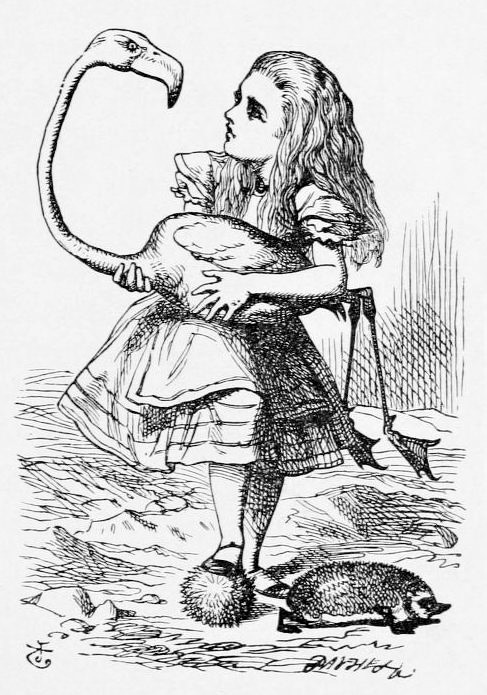
やってる人も自分の番を待たずにみんないっせいにやるし、ずーっと大声で言い合い、ハリネズミの取り合い。なのであっというまにクイーンは
アリスはどうにも気もそぞろ、たしかにまだクイーンとは１度も口げんかしてなかったけど、いつ起こるともしれないから、「そうなったとき、」とアリスは考える、「あたくしの身はどうなるの？ このひとたち、ここにいるひとたちを打ち首にしたくてしたくて仕方ないみたい。こんな調子で、だれかひとりでも生き残れたものかしら！」
にげのびる手立てをさがしながら、すがたを見られずに立ち去れるのかしらと思っていたところ、気づけばお空のなかにぱっとへんてこなものが登場。はじめは何がなにやらわけがわからなかったけど、ものの数分もながめていると、そいつが
「うまくやってるかにゃ？」とネコは、話せるだけの口が出たとたんに言ってね。
アリスはお目々が出てくるまで待ってから、うなづく。「まだ話しかけてもむだ。」と思ってね、「あの子の耳が、せめて片方でも出てから。」１分もすると頭がまるまるあらわれたので、それからアリスは持ってたフラミンゴを下ろして、ゲームのことをかくかくしかじか、聞いてくれる相手ができて、もううれしくってね。ネコはそれだけ見えればじゅうぶんと思ったらしく、そこから先は出てこない。
「あのひとたち、たぶんまともにゲームできていなくてよ。」と言い出すアリスの口ぶりはちょっぴり
「クイーンはどうにゃい？」と小声のネコ。
「もうだめ。」とアリス、「だってめちゃくちゃ――」とちょうどそこでクイーンが背後で聞いているのに気がついて、言葉の先がこんなふうに、「――お強いんだもの、もうゲームなんてやってられないって気持ちね。」
クイーンはにっこりと笑って通りすぎる。
「だれと話しておる？」とキングがアリスにお近づき、ものめずらしそうにネコの頭を見つめてね。
「お友だちの――チェシアのネコです。」とアリス。「どうぞよしなに。」
「
「べーつにぃ。」と答えるネコ。
「こらえしょうのないやつめ、」とキング、「そのような目でわしを見おって！」と言いつつアリスの後ろにかくれてね。
「ネコでも王さまが見られる。」とアリス。「そう読んだ本にも書いてあってよ、でも何だったかしらん。」
「むう、やつを追いはらわねば。」と言い切ったキングは、そのとき通りがかったクイーンに声をかけて、「おまえ、あのネコを追っぱらってはくれまいか。」
クイーンは大小問わず、やっかいごとおさめるときにはこれしかない、「こやつの首をちょん切れ！」と、あたりに目をやることもなく言う。
「処けい人をじきじきに連れてこようぞ。」とやる気まんまんのキングはいそいそその場を外す。
アリスは自分ももどってゲームのゆくえを見守った方がいいかなと思ったんだけど、そのあいだもクイーンの声が遠くから聞こえてね、心のままにさけんでいて。やってる人でも、もう３人が打つ順をまちがえたってことで処けいを言いわたされたのを耳にしていたし、自分としてもこんなありさま見てられないと思ってね、だってゲームは自分の番かどうかもわからないくらいしっちゃかめっちゃかなんだから。なのでとりあえず自分のハリネズミをさがしに。
ハリネズミはほかのハリネズミと取っ組み合いのけんかをしていて、今ならそのふたつをうまい具合に当て打ちできるとアリスは思ったんだけど、ただこまったことに、自分のフラミンゴが遠く庭のはしっこまで行ってしまっていてね、アリスの目には、そいつが木のひとつにとびうつろうと、むだなあがきをしているのが見えて。
つかまえたフラミンゴをかかえてもどってくるころには、けんかもお開き、ハリネズミは２ひきともすがたがなくってね。「もうどうでもよくてよ。」と思うアリス、「ゲートもみんなグラウンドのこっちがわにはいなくなってることだし。」そこでにがさないよう、そいつをわきにぎゅっとかかえて、お友だちともうちょっとお話でもと引き返していく。
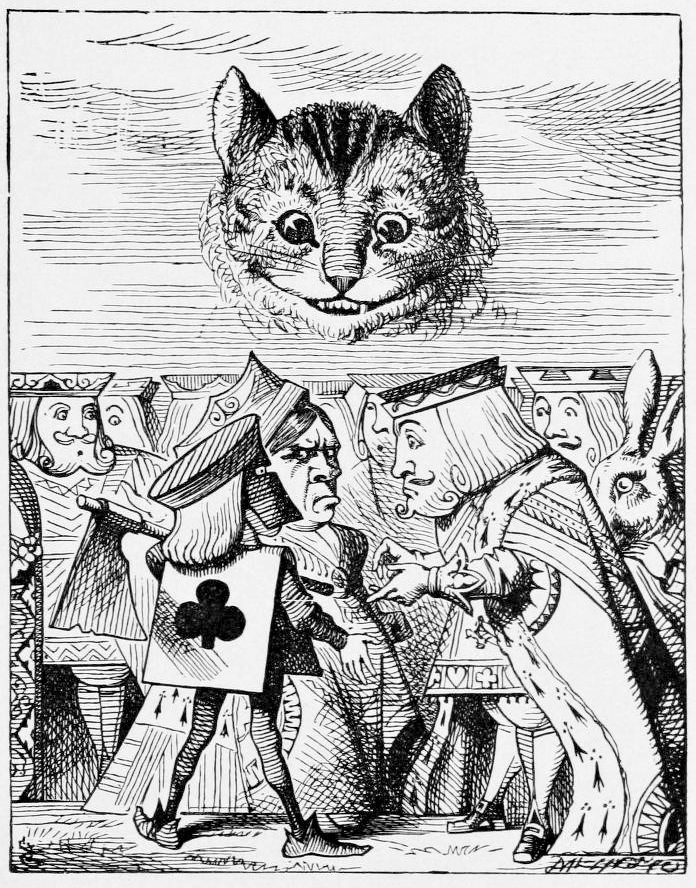
チェシアのネコのところへもどると、びっくりしたのが気づけばまわりに人だかりができてたってこと。それになんと処けい人とキングとクイーンとのあいだでいざこざが起きていてね、いちどきにみんなしゃべるものだから、そのあいだその場にいるものはまったくおしだまるだけで、なんとも気まずそうで。
アリスがあらわれたとたん、その３人には助けの船みたいにうつったのか、その子に向かってそれぞれの言い分をくりかえすんだけど、やっぱりいちどきに言うものだから、だれが何を言ってるのかはっきり聞き取ろうにも本当にややこしくって。
処けい人の言い分は、切りはなす身体もないのに首は切れないということ、それからそんなことこれまでしたこともないし、今さらこの年でやってみる気もないとのこと。
キングの言い分は、頭のあるものは打ち首にできるはず、たわけた話を言うなというもの。
クイーンの言い分は、今すぐさまただちに手が下されないのであれば、だれかれかまわずみな処すというもの。（この言葉が決め手となって、その場の一同どうにもみなざわざわ。）
アリスにはもうこう言うしかないと思えてね、「ネコのかい主は御前さまです。その方にうかがうのがよろしいかと。」
「あやつはオリのなかじゃ。」とクイーンは処けい人に言ってね。「ここへ連れてこい。」すると処けい人はひょうふっと走り去る。
ネコの頭はそのとたんに消えだして、御前さまを連れてもどってきたときにはもう、まったくいなくなっていてね。そこでキングと処けい人はむやみやたらにそこらをさがしまわるんだけど、そのうちその場のみんなもゲームにもどっていっちゃった。
［＃改ページ］
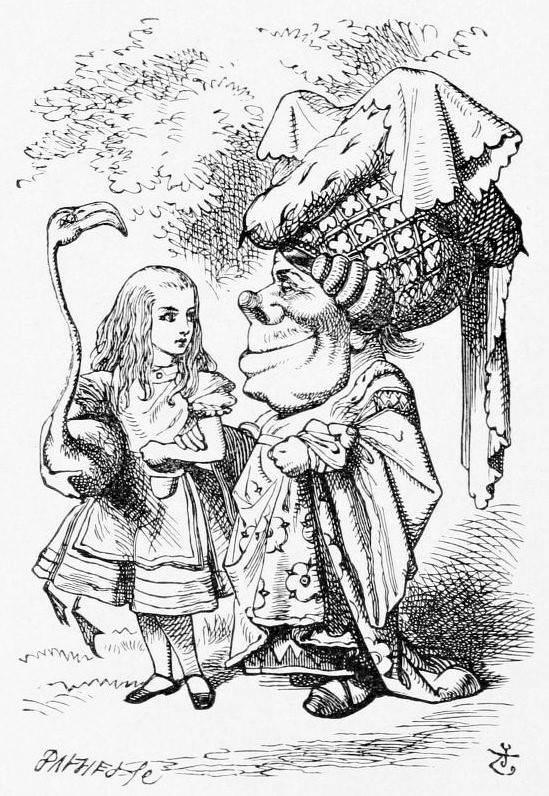
「うれしいこといかばかりか、また顔を合わせられるとは、なつかしいことよの。」と御前さまはなれなれしくアリスのわきにうでを通してきてね、ふたりは連れだって歩き出すことに。
アリスも御前さまのごきげんがよろしいとわかって、とてもほっとしてね、台所で会ったときあんなにつっけんどんだったのも、よもやコショウのせいかなとも思えてきたり。
「あたくしが御前さまなら、」とひとりごと（とはいえ
ここまで来ると御前さまのことなんかすっかりどわすれ、そこへその声が耳元で聞こえたものだから、ちょっとびくっとしちゃってね。「何か考えごとかえ、おまえさん、それでおしゃべりはおそろかと。そんなそちにぴったりの教えは、今はうまく出てこんが、まあそのうち思い出そうて。」
「たぶんそんなのなくてよ。」とアリスは思いきって口答え。
「ちっ、ちっ、子どもよの！」と御前さま。「何にでも教えは見いだせるものじゃ、気づきさえあればな。」とお話のあいだアリスに体をべたべたくっつけてね。
相手が近すぎるのがアリスはあんまりうれしくなくってね、だってなにより御前さまのお顔はほんとにぶさいくだし、それからアリスのかたの高さが、あごをのせるのにちょうどいいみたいで、しかもそのあごは気持ち悪いことにとがってると来た。とはいえ無礼なことはしたくなかったので、できるだけがまん。
「ゲームは今そこそこうまく行ってるみたいね。」と、もうちょっと会話を続けてみる。
「うむ。」と御前さま。「そしてそこから学べる教えとは――『おお、それこそ愛、愛こそが世をうまくめぐらせる！』」
「どなたかによれば、」とつぶやくアリス、「それって、みんながひとにちょっかい出さなければの話じゃなくて？」
「おお、さよう！ つまりはまさしくそういうこと。」と言いつつ御前さまはアリスのかたに、とがったあごをぐりぐりぐり、たたみかけるように「そしてそこから学べる教えとは――『意味が決まれば自ずから言の葉も決まる。』」
「何からでも教えに気づきたがるおひとってわけね。」とひとり思うアリス。
「みなまで言うな、そちはこう思うのじゃろ、わらわがどうしてこしに手を回さんかと。」とほざく御前さま、ちょっと間をあけて、「そのわけは、そちのフラミンゴがやにわにあばれんかとあやぶんでおるからじゃ。ためしてもよいかの？」
「たぶんかみついてよ。」と身がまえるアリス、そんなのたまったもんじゃないからね。
「それもそうじゃの。」と御前さま。「フラミンゴもからしも、やられればひりひりする。そこから学べる教えとは――『
「でも、からしは生き物じゃなくてよ。」とつっかかるアリス。
「うむ、ふつうはな。」と御前さま。「なんとはっきりものを言うやつじゃ！」
「なら石とか岩ね、たぶん。」とアリス。
「むろんそうとも。」とほざく御前さまは、アリスの言うことなら何でもうなずいていくご様子。「ここほど近くの山にも、からしがたくさんうまっておる。そしてそこから学べる教えとは――『うまればうまるほどうまくなる。』」
「あ、わかった！」とさけぶアリス、相手の決めぜりふなんて聞いちゃいない。「
「そちの言うとおり。」と言い出す御前さま。「そしてそこから学べる教えとは――『そう見えるのならそうなのだ。』――すなわちさらにわかりよう言えば――『おのれのことを、ひとの目にうつるものとはちがうなどとは思わんこと、かつてそうであった、そうであったかもしれない、事実そうであったおのれとはちがうなどとは、それもまたひとの目にはちがってうつるのだから。』」
「たぶん、書き起こしたものがあれば、」とまじめに取り合うアリス、「もっとよくわかると思うんだけど。おっしゃってること、ちょっとついていけなくてよ。」
「こんなもの、ものは言いよう、大したことない。」と返す御前さまはごまんえつ。
「ならもうわざわざしていただかなくてけっこう！」とアリス。
「そんなわざわざだなんて！」と御前さま。「これまでの言葉をみな、そちに進ぜよう。」
「やっすいおくりものね！」と思うアリス。「みんながたんじょう日プレゼントにこんなのくれなくてよかった！」でも思い切って声に出すことはできずじまい。
「また考えごとかえ？」とたずねてくる御前さまのとんがったあごがまたつきささる。
「あたくしだって考えごとしてしかるべきよ。」とつんつん言い出すアリス、だってちょっとわずらわしく思えてきたものだから。
「しかるべきじゃとも、」と御前さま、「ブタが空を飛ぶくらいには。そしてそこからま……」
ところがここで、アリスもほんとにびっくり、御前さまの声がとぎれてね、大好きな「学べる教え」という言葉を言いかけたところだったのに、組んでたうでもぶるぶるしだして。アリスが顔を上げると、なんとクイーンが自分たちの前に立ちはだかってうで組み、おまけに雷雨のごとくけわしいお顔。
「お日がらもよく、クイーンさま。」と切り出す御前さまの声はか細く小さい。
「よいか、よおく聞くがいい。」と大声のクイーン、話しているあいだもどんどん足ぶみ。「この場からそなたがのうなるか首がのうなるか、いずれがよい？ たった今よりすぐさまだ！ さあ決めろ！」
決めた御前さまは、ただちにいなくなった。
「さてゲームの続きよの。」とアリスに言うクイーン。アリスもこわくてこわくて何も言い出せなくて、とりあえずそうろっとうしろからついていってクローケー場に。
残ってやってたひとたちもみんな、クイーンがいないのをいいことに、かげで一休みをしていてね。ところがすがたが見えたもんだから、とたんにあわててゲームにもどる、クイーンはただ、少しでもおくれたら、きさまらの命はないぞと言うばかり。
みんながやってるあいだも、ずっとクイーンはやってるひとたちみんなとの口げんかをやめなくて、「あの男の首をちょん切れ！」とか「あの女の首をちょん切れ！」ってわめくばっかり。言いわたされたやつはみんな、強者にしょっぴかれていくから、そうなるともちろん玉くぐらせの役ができなくなるわけで、そんなこんなで３０分かそこらもたつと、残ったのはキングとクイーンとアリスだけで、あとはみんな処けいを言いわたされてしょっぴかれてしまった。
そこでクイーンも手をとめて、ぜえはあ言いながら、アリスに一言、「そちはもうウミガメフーミに会うたか？」
「いいえ。」とアリス。「そもそもウミガメフーミが何だかぞんじませんし。」
「ウミガメフーミスープのもとになるものよの。」とクイーン。
「そんなの見たことも聞いたこともなくてよ。」とアリス。
「ならばこちへ。」とクイーン、「さすれば本人がいわれを教えてくれよう。」
いっしょになってそこをはなれるとき、アリスの耳へ、キングがその場のみんなにかける声がかすかに、「このたびはみな大目に見る」って。「はあ、ほっとしてよ！」とひとりごと、だってクイーンが処けいをたくさん言いつけてかなり気を落としていたからね。
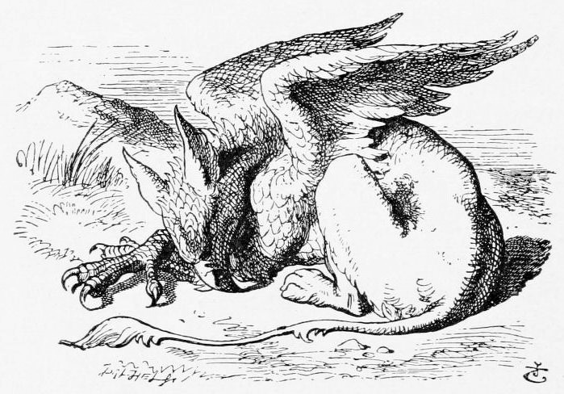
まもなく行き当たったのが１ぴきのグリフォン、日なたですやすやねていてね（グリフォンがどんなのか知らないなら、さし絵をごらん。）「起きよ、なまけもの！」とクイーン、「この
身体を起こしたグリフォンが目をこすって、そのあと見えなくなるまでクイーンをまじまじ。そのあとふくみ笑い。「けっさくでい！」とグリフォンは、ひとりごと半分でアリスに言う。
「けっさくって、何が？」とアリス。
「あの女さ。」とグリフォン。「みんなあいつの思いこみでい、だれひとり処けいなんてされねえってことよ。こっちだ！」
「ここの方々『こっちだ』ばっかり。」と思いつつもアリスはそいつにゆっくりついていく。「生まれてこのかた、そんなふうに言いつけられたこと、なくてよ、なくってよ！」
歩いてほどなく遠くに見えてくるウミガメフーミ、いわおの小さなでっぱりに、ひとり悲しそうにこしかけていてね、近づくにつれ聞こえてくるそのため息、まるでむねがはりさけたみたい。だから心からかわいそうになって、「何が悲しくって？」とグリフォンにたずねたんだけど、グリフォンの答えは、さっきのとほとんど同じような言葉でね、「みんなあいつの思いこみでい、悲しいことなんてべつにありゃしねえ。こっちだ！」
で、ウミガメフーミのところまでたどりつくと、大きな目をうるうるさせて見てくるわりに、ものも言わない。
「こちらの
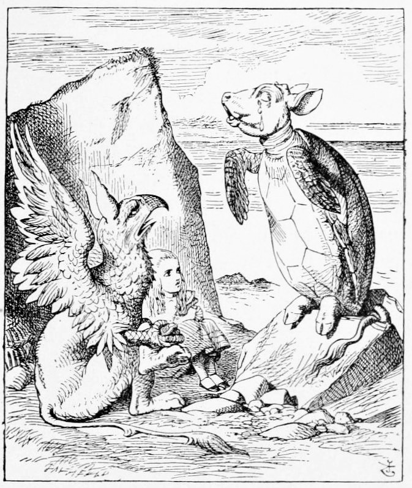
「そちらに申します。」とウミガメフーミは、消え入りそうな声で、「おふたかたとも、おすわりくだせえ、しまいまでどうかお静かに。」
というわけで、こしを下ろして、しばしのあいだ一同だんまり。そこでアリスは考えごと、「始まらないなら、おしまいも何もないんじゃなくて？」でもじっとこらえる。
「昔は、」とついに口を開くウミガメフーミ、ふかいため息ついて、「あっしもまっとうなウミガメでした。」
そう切り出したあと長い長い間があってね、ときどきグリフォンの「ひっくるぅー」というおたけびがはさまったり、ひっきりなしウミガメフーミのさめざめという泣き声が聞こえたりするくらいで。アリスは立ち上がって「面白いお話ご苦労さま。」と言い捨てそうになるところだったけど、きっと何かあるはずとどうしても思えるのもあって、すわったままだまっていたんだ。
「まだ小せえころは、」とウミガメフーミはおもむろに続きを話し出してね、たびたびまだしゃくり上げたりしながら、「海の学びやに通うたもんで。先生はウミガメのじいさんで――あっしらはよくスッポンと呼んどり……」
「どうしてそんなあだ名になって？ ほんとはちがうのに。」と口をはさむアリス。
「まっさらな本は
「てめえそんな当たりめえのこと聞いてはずかしくねえのか？」とグリフォンが追いうち、そのあとはふたりとももの言わずすわったまま、かわいそうなやつと目を向けてくるので、アリスは穴があったら入りたい気持ちになってきて。やがてグリフォンがウミガメフーミに声をかけてね、「続けろい、こんにゃろ！ 日がくれちまう！」するとウミガメフーミはこう言葉をついでいく――
「で、あっしらは海の
「できないって言うの？」と口をはさむアリス。
「ああ。」とウミガメフーミ。
「じゃかあしい！」とかぶせるグリフォン。
「とにかく一等の学舎でした――そのはずで、あっしら週日、学校行ってたんですぜ……」
「あたくしだって『週日学校』に通ってよ。」とアリス。「そんなのでじまんするつもり？」
「
「もちろん、」とアリス、「受けてよ、フランス語に音楽。」
「洗い物はしねえのかい？」とウミガメフーミ。
「するわけないじゃない！」とアリスはぷんすか。
「おお！ ならあんたんとこは、ええ学舎じゃねえんで。」とウミガメフーミの口ぶりはたいへんほっとしたようで。「あっしらんとこじゃ、
「べつに必要ないことなくて。」とアリス。「海の底でくらしてるんだもの。」
「まあ、あっしは習うゆとりがなかったもんで。」とウミガメフーミはため息。「普通の科目だけでやした。」
「何があるの？」とくいつくアリス。
「そりゃあ、より方にまき方から始めまして、」と答えるウミガメフーミ、「それから算数を一通りやりまして――わたし算にひっきり算、ばけ算にわらい算。」
「ばけ算だなんて初耳。」と思い切って口に出すアリス。「何それ。」
グリフォンはびっくり、前足をふたつとも高く上げて、「化け物ってな知らねえか！」とさけんでね。「
「ええ、」と言うアリスは自信なさげ、「それって――あの――きれいに――化ける――ことでしょ。」
「それで、」と引き取るグリフォン、「化け物のことを知らねえたあ、てめえアホウよ。」
しょげてしまったアリス、そこからまた何かをたずねる気にもならなくてね、だからウミガメフーミの方を向いて言ったんだ。「ほかに何のお勉強したの？」
「へえ、からっきしを。」と答えるウミガメフーミはひれでひとつずつ科目を数えていってね――「からっきし、こりゃあ昔のも今のもで、それにとばっちり。あとはヨガ
「それってどうやるわけ？」とアリス。
「いや、あっしにゃあとてもとても。」とウミガメフーミ。「身体がかたくて。それにグリフォンのだんなも知りやせんし。」
「ひまがねえもんでな。」とグリフォン。「まあ古文の先生にはついたさ。カニのじいさんよ、そいつは。」
「あっしは行っとりませんが。」とウミガメフーミはため息。「何でも昔の笑ってん語と歯ぎしりや語を教えなさるとか。」
「そうよ、そうともよ。」と今度はグリフォンもため息。そして２ひきの生き物はその前足で顔をおおってね。
「で、１日に何時間くらいあるわけ？」とアリスはあわてて話を切りかえる。
「１日目は８時間、」とウミガメフーミ、「次の日は４時間と続いていくんで。」
「すっごくへんてこりん！」と思わず声に出すアリス。
「そこはそら
これはアリスには思いもよらないことだったので、ちょっと考えてみてから次にはこんなことを言い出してね。「じゃあ割り切れなくなった５日目はお休み？」
「その通りでごぜえやす。」
「でもそれじゃ６日目はどうするの？」とわくわくしながら続けるアリス。
「時間割の話あもういい。」とグリフォンがばっさり割りこんでね。「さあ、この子におゆうぎでも教えてやろうや。」
［＃改ページ］
ウミガメフーミは深々ため息、ひれのうらで目元をぬぐってね。アリスを見すえて話そうとするんだけど、ものの数分、声をつまらせながらさめざめ。「のどにほねがつかえたみてえなざまだ。」とグリフォン、さっそくゆすぶって、背中をどんどんたたいて。とうとう声が出せるようになったウミガメフーミ、あいかわらずほおになみだをたらしながら話の続き。
「もしやおめえさんは海の底でくらしたことがなくて――」（「なくてよ。」とアリス。）――「するってえとまさかロブスターにも顔合わせたことがねえ――」（「食べたことはあ……」と言いかけたけどあわてて口をつぐんでから、「ない、ぜんっぜん。」）「……なら、ごぞんじねえわけですな、うっきうきのロブスターのカドリールは！」
「ええ初耳。」とアリス、「どういうダンスなの？」
「そりゃあ、」とグリフォン、「海辺ぞいに１列になってな……」
「２列でい！」と声を上げるウミガメフーミ、「アザラシにウミガメにシャケにいっぺえよ。で、じゃまなクラゲをみんな追っぱらったら……」
「それにいつもひまがかかりやがる！」と口をはさむグリフォン。
「――２歩前ん出て……」
「てめえごとで相手にロブスターをだな！」と声をはるグリフォン。
「そうともさ。」とウミガメフーミ、「２歩出て相手につらを向けてな……」
「――ロブスターを取りかえ、元の列にもどる。」と先を続けるグリフォン。
「それからほら、」と引きつぐウミガメフーミ、「投げんだよ……」
「ロブスターを！」とさけぶグリフォン、ぴょーんとおどり上がる。
「――できるだけ海の遠くへ……」
「で追っかけて泳ぐ！」とグリフォンのおたけび。
「海んなかでとんぼ返りよ！」と大声のウミガメフーミはやたらはね回る。
「またロブスターの取っかえ！」とあらんかぎりにわめくグリフォン。
「
「それなりにすてきなダンスじゃなくて？」とアリスはぎこちない。
「ちっとばかし見たかあねえですか？」とウミガメフーミ。
「ええぜひ。」とアリス。
「さあ、ひと回りやってみやしょうぜ！」ウミガメフーミからグリフォンへ、「まあロブスターなしでもできましょうて。どっちが歌いやす？」
「よし、てめえが歌え、」とグリフォン、「文句をわすれちまってな。」
と、もったいぶりつつ始めると、アリスのまわりをぐるぐる、たびたびふみこみすぎては毎回つま先をふんづけていきつつ、ふしを取ろうと前足ふりふり、そのあいだ歌うのはウミガメフーミ、こんなふうにしみじみと。
マイマイ、マダラにうしろをつかれて
サメがせまってる そこまで来てる
みんな先まで泳いでる
ぼくらを待ってる――おどりにゆこう
行こうよ、どうかな、おどりにさ
行こうよ、どうかな、おどるのは
だって楽しく海へと投げられて
ロブスターと浜から ぶんぶんざぶん
でもマイマイ言うには 遠すぎる
うれしいけれど おどりに行けない
いやいや、無理だよ、おどりはさ
いやいや、無理だよ、おどるのは
そこでマダラはせっつく 遠くても
向こうに行けば 陸地はあるよ
遠い近いは気持ち次第
やる気を出して おどりに混ざろう
行こうよ、どうかな、おどりにさ
行こうよ、どうかな、おどるのは
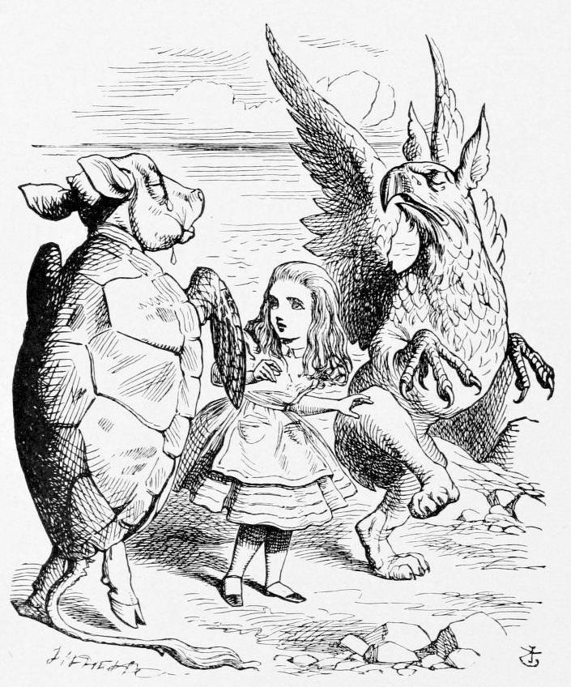サメがせまってる そこまで来てる
みんな先まで泳いでる
ぼくらを待ってる――おどりにゆこう
行こうよ、どうかな、おどりにさ
行こうよ、どうかな、おどるのは
だって楽しく海へと投げられて
ロブスターと浜から ぶんぶんざぶん
でもマイマイ言うには 遠すぎる
うれしいけれど おどりに行けない
いやいや、無理だよ、おどりはさ
いやいや、無理だよ、おどるのは
そこでマダラはせっつく 遠くても
向こうに行けば 陸地はあるよ
遠い近いは気持ち次第
やる気を出して おどりに混ざろう
行こうよ、どうかな、おどりにさ
行こうよ、どうかな、おどるのは
「ご苦労さま、とてもゆかいなダンスね。」とアリスは、ようやくダンスが終わってほっとした気分。「それにへんてこなマダラの歌もまあ気に入ってよ。」
「おお、マダラと言やあ、」とウミガメフーミ、「そりゃあ――見たこたあありやすね？」
「ええ、」とアリス、「何度も、お
「まあ、オショクてな場所がどこかは知りやせんが、」とウミガメフーミ、「よく見るんでしたらそりゃどんなふうか知ってやすね？」
「たぶんね。」とアリスはよくよく考えた上でお返事。「尾っぽを口にくわえてて――全身にパン
「パン粉は何かのまちがいですぜ。」とウミガメフーミ。「海んなかじゃあパン粉なんかみんな流れちめえます。でも口に尾っぽをくわえたあいるな。そのわけあ――」とここでウミガメフーミはあくびをして目をつむってね。「その子にわけやら何やらを教えてつかあさい。」とグリフォンにあずける。
「まあつまりは、」とグリフォン、「マダラはロブスターといっしょにおどりに行くもんだからよ。で、海へ放り投げられて。で、落ちるまでに暇があって。で、口に尾っぽをくわえるて。で、二度と口から出なくなったってえことよ。おしめえ。」
「ご苦労さま。」とアリス、「とってもゆかいね。マダラのことなんて今までぜんぜん知らなかった。」
「おのぞみならもっと教えてやんでい。」とグリフォン。「マダラって名前の由来は知ってるか？」
「考えてもみなくてよ。」とアリス。「何なの？」
「皮ぐつをまだらにみがくからよ。」と答えるグリフォンはしごく真面目。
アリスの頭はハテナだらけ。「皮ぐつをまだらにみがく？」とふしぎそうにくり返してね。
「そうよ、皮ぐつをみがいたらどうなる？」とグリフォン。「つまりきゅっきゅってみがいたらだぜ。」
アリスは自分のくつを見つめてから、ちょっとばかし考えて答えを出す。「ぴかぴかのまっ黒になってよ、ふつうは。」
「海んなかで皮ぐつをみがきゃあ、」と野太い声で続けるグリフォン、「はげてまだらになるんよ。おぼえときな。」
「その、海の皮ぐつってどうなってて？」そのへんてこぶりにわくわくしてきたアリス。
「そりゃ下はくつジャコで、くつハモを結ぶのさ。」と返すグリフォンはいらただしげ。「そんなのカレイでも知ってるぜ。」
「あたくしがマダラだったら、」と言うアリスはまださっきの歌のことがずっと頭にあってね、「サメにはこう言ってやってよ、『ついてこないでちょうだい！ いっしょにいたくないの！』」
「連れなきゃなんねえのです。」とウミガメフーミ。「ズサメなきゃ魚ってな、どこにも行けねえんで。」
「そんなまさか？」とかなりびっくりした口ぶりのアリス。
「そのまさかよ。」とウミガメフーミ。「まあ、あっしのとこに魚が来て、これから旅に出るなんて言やあ、こう言うね、『どこをズサメんだ？』」
「それって『目指す』じゃなくって？」とアリス。
「てやんでえ。」とウミガメフーミはむっとしたお返事。するとグリフォンが口をはさんでね、「まあてめえの身の上でも聞かせてくれやい。」
「なら教えてあげてよ、あたくしの身の上――そもそもは今朝のこと。」とアリスはちょっとおそるおそる、「でも昨日をふりかえるのはおことわり、だってそのときはあたくし別人だったんだもの。」
「そっちを語っておくんなせい。」とウミガメフーミ。
「ダメだ、ダメだ！ 先に身の上でい。」とじれったそうに言うグリフォン、「そんなの語ってたら、すさまじくひまがかかる。」
そこでアリスは今までの身の上を語り始めてね、はじまりはまず白ウサギを目にしたところから。はじめのうちはちょっと気おくれしてたんだけど、２ひきの生き物は
「こりゃ何もかもへんてここの上ねえ。」とグリフォン。
「全部ちがっちまうとは！」としみじみくり返すウミガメフーミ。「ちょいと何か聞いてみてえな。さいそくしてくだせえ。」と、アリスに言うこときかせるのはそっちと言わんばかりにグリフォンを見つめてね。
「ほれ立って、歌は『グズのうた』で。」とグリフォン。
「ほんとここの生き物は、ひとに何か言いつけたり、いちいちそらでやらせたりばっかり！」と思うアリス。「学校に行ってる方がまだましね。」とはいえ立ち上がってそらでやってみるわけなんだけど、頭はロブスターのカドリールでいっぱいだったので、自分が何を口走っているかほとんどわかっていなくてね、歌の文句もこんなひどくけったいになってしまって――
エビの声が 聞こえてくる
焼きすぎだ 砂糖をまぶせ
アヒルみたく 鼻を使って
おしゃれして 外またで立つ
引きしおでは はしゃぎだし
サメをバカに したけれど
満ちしおでは サメが来る
声はふるえ ぶるぶる
声はふるえ ちぢこまる
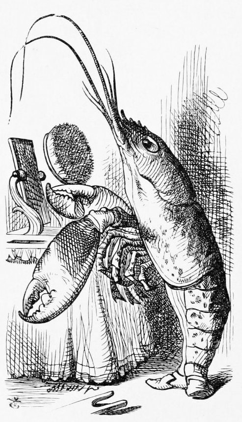焼きすぎだ 砂糖をまぶせ
アヒルみたく 鼻を使って
おしゃれして 外またで立つ
引きしおでは はしゃぎだし
サメをバカに したけれど
満ちしおでは サメが来る
声はふるえ ぶるぶる
声はふるえ ちぢこまる
「ガキんころによく歌ったのたあちげえな。」とグリフォン。
「うーん、聞いたこともありゃしやせんが、」とウミガメフーミ、「じんじょうでねえほどすっからかんな歌で。」
アリスは何も言えなくって。両手で顔をおおったまままたへたりこんでね、また元通りになることがはたしてあるのかどうかとなやましく。
「どういうことなのか、ときほぐしてくだせえ。」とウミガメフーミ。
「できるわけあるか。」とうろたえるグリフォン。「その続きをやってみようや。」
「でも外またってのは？」としつこいウミガメフーミ。「鼻でどうやって外に広げるってんですかい、ほれ？」
「ダンスのとき、まず足をそう置くの。」とアリス。だけど何やかやにもうひどく頭がぐちゃくちゃで、話を変えたくてしかたなく。
「その続きをやってみようや。」とじれったそうにまた言うグリフォン、「『庭先にて』からいってみよう。」またまちがうに決まってるとは思いつつも、とりあえずアリスは言うことを聞くことにして、声をふるわせながらも続きを歌ってね――
庭先にて パイをわける
フクロウとヒョウの２ひき
パイとお肉 食べるヒョウ
フクロウは 残りのお皿
パイがすっかりなくなると
フクロウ スプーンいただくが
せまり来るは ヒョウのやつ
ナイフかまえ がるるる
〆に ……
フクロウとヒョウの２ひき
パイとお肉 食べるヒョウ
フクロウは 残りのお皿
パイがすっかりなくなると
フクロウ スプーンいただくが
せまり来るは ヒョウのやつ
ナイフかまえ がるるる
〆に ……
「そんなもの歌って何のねうちがあるってんだ？」と横入りするウミガメフーミ、「しかもそのまま自分ではときほぐせねえってんだ。こんなややこしさきわまるもん聞いたこともねえ！」
「そうさな、たぶんもうやめなきゃどうしようもねえな。」とグリフォン、アリスもやめられてほっとすることしきり。
「もうひと回りとしゃれこむか？」とグリフォン、「それよかお歌が好みか？」
「ええ、お歌をお願い！」とアリスの返事があまり本気なので、グリフォンもちょっときずついたみたいで、「へえ！ 人も好き好きか！ 『ウミガメスープ』を歌ってやれ、こんにゃろめい？」
深くため息をついたウミガメフーミは、なみだにむせびながらも歌い出す――
こくまろすうぷ すうぷ
おなべで ほかほか！
がまんできない もう！
よるのすうぷ すてきなすうぷ！
よるのすうぷ すてきなすうぷ！
すう〜うてきな すう〜ううぷ！
すう〜うてきな すう〜ううぷ！
よお〜おるの す〜ううぷ！
すてきな すてきな すううぷ！
おさかな いらない
おにくも ばいばい！
みんなほくほくだよ！
これでおーけぇ すてきなすうぷ！
これでおーけぇ すてきなすうぷ！
すう〜うてきな すう〜ううぷ！
すう〜うてきな すう〜ううぷ！
よお〜おるの すう〜ううぷ！
すてきな すう〜うてきな すううぷ！
おなべで ほかほか！
がまんできない もう！
よるのすうぷ すてきなすうぷ！
よるのすうぷ すてきなすうぷ！
すう〜うてきな すう〜ううぷ！
すう〜うてきな すう〜ううぷ！
よお〜おるの す〜ううぷ！
すてきな すてきな すううぷ！
おさかな いらない
おにくも ばいばい！
みんなほくほくだよ！
これでおーけぇ すてきなすうぷ！
これでおーけぇ すてきなすうぷ！
すう〜うてきな すう〜ううぷ！
すう〜うてきな すう〜ううぷ！
よお〜おるの すう〜ううぷ！
すてきな すう〜うてきな すううぷ！
「※くり返し！」とグリフォンが声をはって、ウミガメフーミがふたたび歌い始めたまさにそのとき、「おさばきの始まり！」というさけび声が遠くから聞こえてきて。
「こっちでい！」とグリフォンはアリスの手を取ってかけ出していく、歌の終わるのもまたずに。
「何？ おさばきって？」とアリスが走りながら声をふりしぼったのに、グリフォンは「こっちだ！」って返すだけでどんどん早足、追い風がふいてるせいか、そのうちますますかすかになっていくうらぶらげな声――
よお〜おるの す〜ううぷ！
すてきな すてきな すううぷ！
［＃改ページ］すてきな すてきな すううぷ！
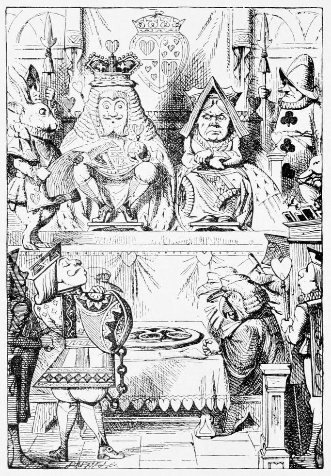
着くと、キングとクイーンが高いところにすわっていて、そのまわりにはおおぜいがお集まり――ありとある鳥さんけものさん、それにもちろんひとそろいのトランプも。ジャックがその前に立たされて、くさりにつながれたままで、左右を強者にかためられていてね。それにキングのわきにはあの白ウサギ、片手にトランペット、もう片手に羊の皮のまき紙。おさばきの場のどまんなかにあるテーブル、その上にタルトをのせた大皿が１まい。見ばえがすごくよかったのでアリスは見るなりはらぺこになっちゃってね――「おさばきなんてとうに終わって、」とか思う、「おやつでも配ってくれたらいいのに！」ところがそんな段取りはどうにもないみたいで、そこでとりあえずまわりをしらみつぶしにながめてひまつぶし。
アリスもおさばきの場自体、ものの本では読んだことがあるだけで、来たのは初めてだったけど、そこにいただいたいのやつらが顔見知りとわかってたいへんほっとしてね。「あれがさばきを下すひと、」とひとりごと、「だって大きなカツラだし。」
ところでそのさばきを下すひとこそキングそのひと。カツラの上に王さまのかんむりをちょこん（どんな具合かたしかめたいひとははじめにある大きな絵を見てね）、どう見てもすわりが悪く、明らかに
「それとあれが、話し合うひとの
１２ひきの裁判員はみんなせわしなく手持ち黒板に何か書き付けていて。「何をしてるの？」とアリスがグリフォンにひそひそ。「何も書きとめることなんてないはずなのに、おさばきが始まるまで。」
「自分の名前を書き付けてんだ、」と返事するグリフォンもひそひそ、「お開きになるより先にわすれちまうとこまるからな。」
「バッカみたい！」アリスの声にもいらいらがこもりだしたんだけど、あわててこらえてね、だって白ウサギが声をはりあげて「お
アリスの目からは、そいつらのかたごしに見える感じなんだけど、裁判員はみんな「バカみたい！」と手持ち黒板に書きとめていてね、そのうちひとりが「バカみたい」をどういう字で書くのかわかっていないのもこっちに見て取れて、どうもとなりに教えてとたのみこむ羽目になったみたいで。「お開きうんぬんの前にあの黒板がめためたになりそう！」と思うアリス。
それに裁判員のひとりが、チョークをきぃきぃ言わせていたんだ。これにはもちろんアリスはたえきれなくって、おさばきの場をぐるっと回り、そいつの背後に立って、すきをねらってさっと取り上げてしまってね。あまりのすばやい手ぎわに、かわいそうに裁判員（トカゲのビル）さんには何が何だかさっぱりわからず、そこであたりを探し回ったあげく、しかたなく最後まで指１本で書くことにしたのに、まったく役に立たずで黒板には何のあともつかない。
「しきり役！ おかされた罪を読み上げよ！」とキング。
これを受けて、白ウサギはトランペットを３ふき、それからまき紙を広げて、こう読み上げる――
ハートのクインがタルトを作る
夏のさなか１日かけて
ハートのジャックがタルトをぬすむ
かくれてこっそりひとりじめ！
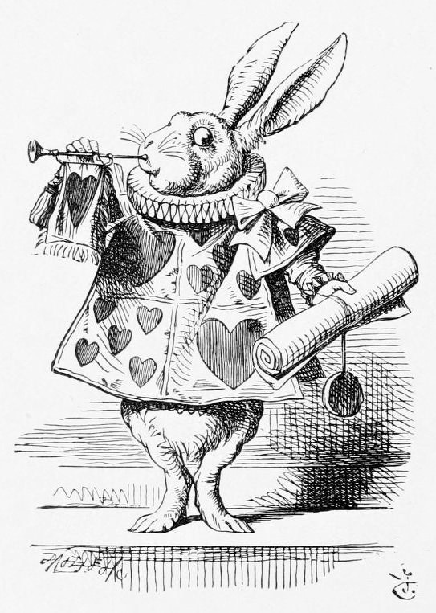夏のさなか１日かけて
ハートのジャックがタルトをぬすむ
かくれてこっそりひとりじめ！
「さあ、おさばきを話し合え。」と裁判員へつげるキング。
「まだ、まだで！」と、あわてて止める白ウサギ。「その前にやることがたっくさんおじゃりまする！」
「ひとりめにわけを聞くぞえ。」とキング。すると白ウサギはトランペットを３ふき、声をはりあげる。「ひとりめ！」
はじめにわけを話すのは、ぼうし屋。入ってくると手にはティーカップ、もう片手にはバターのぬられたパン。「失礼をば、キングさま。」と切り出してね、「このようなものを持ちこみ。ですが、よばれたさいは、お茶会のまっ最中でしたもので。」
「すませておくべきであるぞ。」とキング。「いつ始めた？」
ぼうし屋がヤヨイウサギに目をやると、あとから入ってきたそいつはヤマネとうでを組んでいてね。「３月１４日です、おそらくは。」とぼうし屋。
「１５日。」とヤヨイウサギ。
「１６日。」とヤマネ。
「書きとめよ。」と裁判員へつげるキング。すると裁判員は
「それを取れ、その
「わがものではなく。」とぼうし屋。
「ぬすみおったか！」とさけぶキング、裁判員の方を向くと、すぐさま一同はこのことをひかえる。
「これは売り物で。」と言いわけをあとからするぼうし屋。「わがものではなく、ぼうし屋でありますゆえ。」
ここでクイーンはメガネをかけ、ぼうし屋をじぃとにらみつけるたので、ぼうし屋も心おだやかでなく、顔もまっ
「はよう次第をのべよ、」とキング、「びくびくするでない、さもなくばただちに処すぞ。」
これで相手に先をうながせるわけもなくてね。足の重心を左右に行ったり来たりさせつつ、そわそわとクイーンを見やるんだけど、取りみだすあまり本当ならパンをかじるところを、ティーカップをがりっといっちゃって。
ちょうどこのときなんだけど、アリスはひどくぞくぞくして、へんてこな気分になってね、自分でもしばらくなぜだかちっともわからなかったんだけど、どういうことなのかとうとうわかった。また身体が大きくなりだしていてね、ひとまず立ち上がって
「そんなにつめないでくださいな。」と、となりにすわっていたヤマネが言ってね。「息苦しい。」
「どうしようもないの。」と、とてもすなおなアリス。「育ちざかりなんだもん。」
「だからって、ここで勝手に大きくなるなです。」とヤマネ。
「すっからかんな言い分。」と今度はアリスもふてぶてしい。「ほら、あなただって育つんだから。」
「そうですけど大きくなるかげんはわきまえてますよ。」とヤマネ。「そんなふざけた育ち方なんてしません。」そうしてひどくむっとして席を立つと、さばきの場の向かいがわへまたいでいってしまって。
このあいだずっとクイーンはたえずぼうし屋をにらみつけていてね、ちょうどヤマネがおさばきの場をまたいだときに、その場にひかえていたやつへこう申しつける、「先の音楽会の歌い手の名ぼを持って参れ！」するととたんに、あわれにもぼうし屋はぶるぶるふるえだして、両足ともくつがぬげてしまう始末。
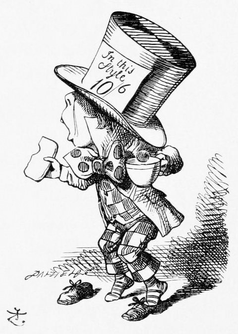
「次第をのべよ。」とくり返すキングはかんかん、「さもなくばびくびくのいかんを問わず処すぞ。」
「わがはいはつまらぬものです、キングさま。」と話し出したぼうし屋はふるえ声、「それにお茶を始めてより――まだ１週間もございません――パンは次第にかっぴかぴとなり――てぇかてかのお茶……」
「てぇかの、何とな。」とキング。
「お茶のことにございますか。」と答えるぼうし屋。
「ふむ、そりゃお茶は『てぇ』とも言うわい！」とキングの声はとげとげしい。「わしをバカにしておるのか？ 続けよ！」
「わがはいはつまらぬものですが、」と続けるぼうし屋、「そのあとあちこちがてかてかと――ただヤヨイウサギが申すには……」
「言わねえ！」と大あわてで口をはさむヤヨイウサギ。
「言った！」とぼうし屋。
「まちがいだ！」とヤヨイウサギ。
「まちがいか。」とキング。「ではその部分を消すがよい。」
「ではとにかくヤマネが申すには……」と続けたぼうし屋が気づかわしげにあたりを見て、まちがいと申し立てられないかとたしかめるも、ヤマネは何も申し立てずぐっすりすやすや。
「そのあと、」とそのまま話し出すぼうし屋、「わがはいはバターのぬられたパンをもう少しとちぎりまして……」
「あの、ヤマネは何と言ったんで？」と裁判員のひとりがたずねる。
「それが思い出せず。」とぼうし屋。
「思い出さねば、」と言い出すキング、「処すぞ！」
あわれにもぼうし屋はティーカップとパンを落として、片ひざをついてね。「わがはいはつまらぬものでございます、キングさま。」と言い出すんだけど。
「たしかにその
ここでモルモットが１ぴき手をぱちぱちとたたいたんだけど、ひかえていたやつらにたちまち取りおさえられてね。（っていうのはちょっとややこしい言い方かな、どうなったのかちゃんと話すね。大きくしっかりした布のふくろ、口のところをひもでしばるやつをもってきて、そのなかにモルモットを頭から取り入れて、その上からすわっておさえたんだ。）
「うれしい、こんなの見られるなんて。」と思うアリス。「新聞では読んだことあったけど、おさばきの終わりに『ざわめくもたちまちひかえていた役人によって取り押さえられた』って、今ようやくなるほどとなってよ。」
「それだけしか知らんのなら、もう下がるがよい。」と先を続けるキング。
「これより下へは行けません。」とぼうし屋。「ゆかをつきぬけろとおっしゃる？」
「ならば、しりをゆかにつけい。」と答えるキング。
ここでもう１ぴきのモルモットが手をたたいたが、また取りおさえられる。
「ふうん、これでモルモットはみんな片づいたってわけ！」と思うアリス。「ようやくおさばきもはかどってよ。」
「よろしければお茶の方をすませても。」と言うぼうし屋は、気づかわしげにクイーンを見やったけれど、歌い手の名ぼを読みふっていて。
「かまわん行け。」とキングが言うので、ぼうし屋はかけ足でおさばきの場をあとにしたんだけど、くつをはき直すのをどわすれしちゃった。

「……そして外でやつの首をはねよ！」と追ってクイーンはひかえている者に言いつけたんだけど、ひかえの者がドアにたどりつくより先にもう、ぼうし屋のすがたはどこへやら。
「次のもの入れ！」とキング。
その次にわけを聞くのは御前さまのコック。手にコショウびんを持っていてね、アリスはそのひとが入ってくる前からだれだか当てがついたんだけど、それというのもドア付近のひとたちがみんないっせいにくしゃみをしたから。
「そこなもの、わけを話せ。」とキング。
「まっぴらだね！」とコック。
キングの気づかわしげな目にさらされて、白ウサギが小声で、「やむをえませぬ、反対にご自身からこの者に次第をたずねてみては。」
「ふむ、やむをえぬならやむをえぬ。」とだるそうなキングはうで組みをして、コックにまゆをしかめるんだけど、そのせいで目はほとんど皮にうもれてしまってね、重々しい声で言うんだ、「タルトは何でできておる？」
「だいたいコショウさ。」とコック。
「シロップです。」とその後ろからねむたげな声。
「そのヤマネを首ねっこじゃ！」と声をしぼり上げるクイーン。「そのヤマネは打ち首じゃ！ そのヤマネをつまみ出せ！ 取りおさえよ！ しょっぴけ！ ヒゲをちょん切れええ！」
しばらくのあいだ、おさばきの場はしっちゃかめっちゃか、ヤマネは外へつまみ出され、みんながもとの場所にもどったころには、コックもすがたを消していて。
「かまうな！」とキングは大きくほっと息をついてね。「次のものをよべい。」それから、そのあとクイーンに向かって、おさえた声音で、「やむをえん、実はの、次はおまえがたずねる役をやってくれんか。ひどくしかめっ
アリスが様子をうかがっていると、白ウサギが名ぼをいじいじしていたので、次によばれるのがどんなひとなのかとってもわくわくしてきてね、「――だって事と次第があんまりはっきりしてないもん、まだ。」とひとりごと。どんなにその子がびっくりしたことか、そのとき白ウサギが読み上げた、ふりしぼって声高にさけんだ名前はなんと、「アリス！」
［＃改ページ］
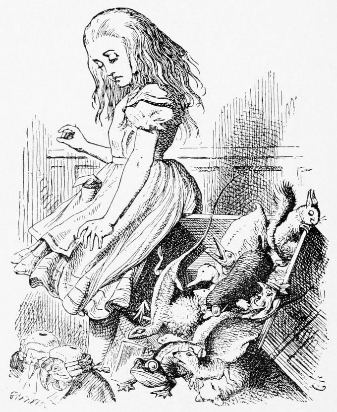
「ここです！」と声を上げるアリス、とっさのことであたふた、この数分で自分の図体がどれだけでっかく育っていたかどわすれしちゃっててね、あんまりあわてて立ち上がったものだから、スカートのすそがひっかかっちゃって裁判員のいる箱形の
「あら、ごめんあそばせ！」と口をついて出るもののどうにもあたふた、大急ぎでひろい上げはじめてね、だって金魚でのうっかりがずっと頭にあったから、なんとなくそう思えたんだ、すぐにひろい集めて座席にもどさないと死んじゃうって。
「おさばきが進められんな。」と言うキングの声はものものしい、「裁判員みなをおのおのの持ち場にちゃあんともどすまで――みなをな。」と最後のところを力強くねんおししつつ、アリスをじろり。
アリスが座席に目をやると、見えたのは、あわてていたからか、頭から
ひっくり返されたどきどきからいささか立ち直った裁判員一同、見つかった手持ち黒板とチョークを手元に置いたとたん、せっせと仕事に取りかかってね、みんなしてこの
「事と次第について何を知っておる？」とキングからアリスへ。
「なんっにも。」とアリス。
「これっぽちもないか？」としつこいキング。
「これっぽちも。」とアリス。
「なんとよしありげな。」とキングは裁判員へと顔を向けてね。みんなそのことを黒板に書き出したところへ、白ウサギが口をはさむ。「よしなし、とのつもりでおじゃりましたか。」と言葉こそうやうやしいけど、話すあいだもみけんにしわでしかめっ面。
「よしなし、とのつもりであったぞよ。」とあわてて口にするキング、ぼそぼそと続けるひとりごと、「よしあり――よしなし――よしなし――よしあり……」どっちが聞こえがいいのか品定めしてるみたいに。
裁判員には「よしあり」と書きとめた者もあれば「よしなし」とした者もいて。かろうじて黒板をのぞけるところにいたアリスは、これを見て、「どのみち大差なくてよ。」とひとり思う。
このときのキング、しばらくいそいそと手元のメモに何かをしたためてたんだけど、いきなり声を出してね、「静まれ！」って、それからそのメモを読み上げたんだ、「決まりその４２。『背たけが１．６キロをこえた者は何ぴともおさばきから
みんながアリスに目をやる。
「あたくし、１．６キロもなくってよ。」とアリス。
「ある。」とキング。
「３キロ近くはある。」と後おしするクイーン。
「ふん、出て行かないもん、ぜったい。」とアリス。「それにちゃんとした決まりでなくてよ。たった今でっち上げたんだから。」
「ここに記されたものでもいちばん古い決まりじゃ。」とキング。
「なら、決まりその１のはずじゃなくって。」とアリス。
顔を青くしたキングは、あわててメモ帳をとじる。「では、おさばきを話し合え。」とふるふる小声で裁判員に。
「まだまだやることがおじゃりまする、キングさま。」と白ウサギはとび上がって大あわて。「このような紙が今しがたとどいておじゃります。」
「中には何と？」とクイーン。
「まだ開けておじゃりませんが、」と白ウサギ、「おそらくは手紙かと、とがびとの手になる――だれかしらあての。」
「そうにちがいなかろう、」とキング、「あて名がないのでないかぎりは。まあまずあるがな、ほれ。」
「だれにあてたものなんです？」と裁判員のひとり。
「あて先が何もないでおじゃる。」と白ウサギ。「むしろ、そとみには字は何もおじゃりません。」と言いながら紙を広げると言葉をついで、「つまるところ手紙でないでおじゃる、これはひと続きのポエム。」
「字の書き方はとがびとのものですか？」と裁判員がもうひとり。
「いえ、ちがうでおじゃる、」と白ウサギ、「そこがたいそうけったいで。」（裁判員はみなハテナだらけのお顔。）
「だれかしらの字の書き方をまねたにちがいない。」とキング。（裁判員みな顔がまたぱっと明るくなる。）
「申し上げます、キングさま、」とジャック、「わたくしめは書いてません、そうだと言い切れるだけのものもないでしょう？ 終わりに名前もそえられてないんですから。」
「名前がないならば、」とキング、「よけいに事はまずくなるぞよ。つまりおぬしはお
これにはその場一同の手からぱちぱちぱち、キングがこの日初めてほんとにうまいことを言ったもんでね。
「はっきりした、やったのはおまえぞ、もちろん。」とクイーン。「では首をちょ……」
「そんなの何もはっきりしてなくってよ！」とアリス。「ふん、何が書かれてあるかもわかってないのに！」
「読み上げよ。」とキング。
白ウサギはメガネをかけてね。「キングさま、どこからお始めに？」とたずねる。
「はじめから始めよ。」とのべるキングはものものしい。「そして続けて、とうとう終わりに来たら、そこでやめよ。」
静まりかえるおさばきの場、そのなかで白ウサギが読み上げたのは次のポエム――
あいつらの話じゃ あの女のところで
おれのことを あの男にしゃべったそうだな
あの女はおれを いいやつと言ったが
おれは泳げないと 言いくさる
あの男があいつらに、 おまえはでかけて
ないと伝えたぞ（おれたちにもたしかなことだ）
あの女がことを おし進めたら
おまえはいったい どうなるやら
おれ→あの女は１ やつら→あの男は２
おまえ→おれたちは３ いやもっとだ
あいつらみんなもどる あの男→おれへ
もともとそいつらは おれのものだったがな
まんがいち おれとあの女が
この件 に まきこまれでもしたら
あの男はおまえに やつらのあつかいをまかす
おれたちのときと まったく同じだ
おれが思うに それまでおまえは
（あの女が かっかするまでは）
出しゃばって じゃまするつもりだったんだろ
あの男と おれらとそれのあいだを
あの男にはもらすなよ あの女の１番びいきが
あいつらだって だってそりゃあ
ひみつに決まってる だれにも言うなよ
おまえとおれ ふたりだけのないしょだ
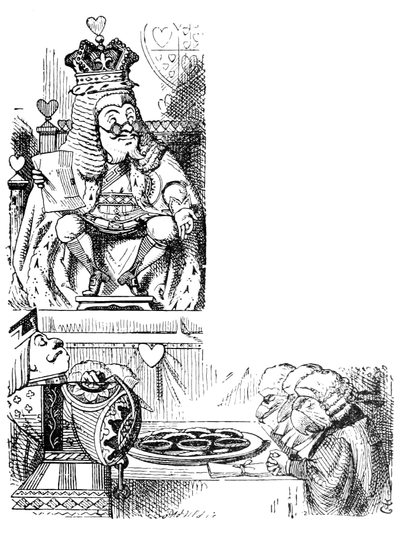おれのことを あの男にしゃべったそうだな
あの女はおれを いいやつと言ったが
おれは泳げないと 言いくさる
あの男があいつらに、 おまえはでかけて
ないと伝えたぞ（おれたちにもたしかなことだ）
あの女がことを おし進めたら
おまえはいったい どうなるやら
おれ→あの女は１ やつら→あの男は２
おまえ→おれたちは３ いやもっとだ
あいつらみんなもどる あの男→おれへ
もともとそいつらは おれのものだったがな
まんがいち おれとあの女が
この
あの男はおまえに やつらのあつかいをまかす
おれたちのときと まったく同じだ
おれが思うに それまでおまえは
（あの女が かっかするまでは）
出しゃばって じゃまするつもりだったんだろ
あの男と おれらとそれのあいだを
あの男にはもらすなよ あの女の１番びいきが
あいつらだって だってそりゃあ
ひみつに決まってる だれにも言うなよ
おまえとおれ ふたりだけのないしょだ
「今まで聞いたなかでも、いちばんのよしありげなわけじゃぞ。」とキングは手をもみもみ、「では今こそ裁判員よ……」
「そこのだれかがこのポエムを読みとけたら、」とアリス（このほんの数分でたいへん大きくなっていたので、まったく物おじもせず口をはさんでね）、「
裁判員もみんな手持ちの黒板に書きとめてね、「こんなのこれっぽちの意味もないと思うと女。」ところがそのうちのだれもその紙を読みとこうとはしない。
「もし意味がないのだとすれば、」とキング、「すさまじく手間がはぶけるぞ、ほれ、何も探らんでよくなるからの。とはいえどうなのかの。」と続けて、ひざ上にそのポエムを広げ、片目でじっと見てみるも、「どうにも何かしらの意味はありそうじゃ、やはり。『……おれは泳げないと言いくさる……』おまえは泳げないのだったな。」と言葉をついで、ジャックに顔を向ける。
ジャックは悲しげにかぶりをふって。「見ての通りですよ。」と返事。（たしかにできそうにない、まったくの
「ここまではよろしい。」とキング、そしてひとりごとみたくぶつぶつそのポエムを読んでいく。「『おれたちにもたしかなことだ』――これはもちろん裁判員のことじゃな――『あの女がことをおし進めたら』――これはクイーンのことにちがいない――『おまえはいったいどうなるやら』――おお、まったくだ！――『おれ→あの女は１ やつら→あの男は２』――ほほう、こうしてやつはパイをよろしくしたわけか、ほれ……」
「でも続きに『あいつらみんなもどる あの男→おれへ』って。」とアリス。
「うむ、だからそこにある！」とキングはしたり顔でテーブルのタルトを指さす。「これほど明らかなことはないとも。そののちまた――『あの女がかっかするまでは』――おまえや、かっかしたことなどないじゃろ？」と言葉をクイーンへ向ける。
「ない！」と言いながらもクイーンはとちくるってインクびんをトカゲに投げつけてね。（とんだ目にあったビルくん、黒板から指で書くのをやめていてね、何も書けないと気づいたからなんだけど、でもこうなってあわててまた取りかかって、顔からしたたるインクを使ってとうとう使い切った。）
「まあ『かっか』というよりは『へいか』じゃしのう。」とキングはおさばきの場を見回しつつ、にやり。あたりは死んだようにしーん。
「だじゃれじゃ！」と続けてキングはむすっとすると、みんな大笑い。
「さて裁判員よ、おさばきの話し合いだ。」とキングは言うんだけど、これこの日でもう２０回目くらいにはなるかな。
「いいえっ！」とクイーン、「言いわたすのが先――話し合いは
「がらくたのすっからかん！」とアリスの大声、「言いわたすのが先だなんて！」
「だまらっしゃい！」と
「だまらない！」とアリス。
「このむすめの首をちょん切れ！」とクイーンがありったけの裏声をはる。ひとりも動かない。
「だれが言うこと聞いて？」とアリス（このときまでに元々の背たけになっていてね）。「あんたたちみたいなただのトランプ！」
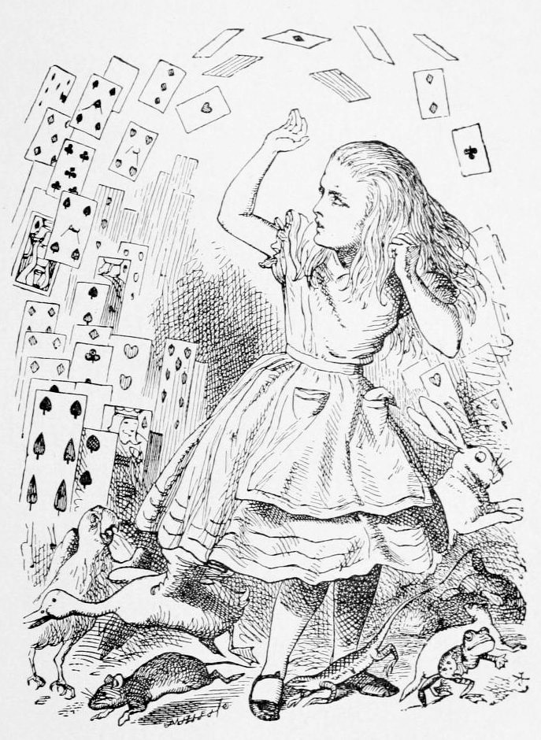
せつな、トランプがいっせいにおどり上がり、空からふりそそいでくる。きゃッと、びくつき半分、むかつき半分で打ちはらおうとしたら、気づけばもとの木かげ、お姉さまにひざまくら、木から頭にひらひら落ちかかっていたかれ葉をやさしく取りはらってくれていて。
「起きて、アリスちゃん。」とお姉さま、「もう、長々としたお昼ねだこと。」
「ねえ、あたくしもう、へんってこなゆめ見てたの！」とアリスはお姉さまに自分がおぼえているかぎりのことを、自分のとっぴなめぐり歩きを、ここまで読んできた通りぜんぶおしゃべり、終わるとお姉さまはキスをしてくれてね、こう言うんだ。「へんてこなゆめだったのね、ほんと。でもすぐにお茶へかけ足しないと、このままだとちこくよ。」というわけで、アリスは起き上がってかけ足、走りながら心のなかは、そりゃやっぱり、これまでのふしぎなゆめのことでいっぱい。
ところがお姉さまは妹がはなれていったあともじっとすわったまま、ほおづえをついて夕ぐれをながめながら、小さなアリスとふしぎめぐりの道行きを考えているうち、今度は自分もうつらうつらゆめを見始めてね、そのゆめっていうのはこう――
はじめにゆめ見るのは、その小さなアリスのこと。何度となく小さなお手々をこちらのひざの上でにぎりながら、さらにきらきらわくわく上目づかいでのぞきこんでくる――聞こえるのはあのいつもの声音、目に入るのは頭をつんと上げるあのけったいなくせ、いつも毛がちらかってどうしても目に入ってしまうからってそうやって元にもどそうとするんだ――そしてじっと耳をかたむける、たぶんかたむけるうちに、そのまわりのあちこちが、小さな妹のゆめのなかのとっぴな生き物でにぎやかになってくる。
長い草が足下でがさごそ、白ウサギがあわててかけてゆく――びくびくネズミがばしゃばしゃ、そばの池を進んでいて――聞こえてくるティーカップのかちゃかちゃ、ヤヨイウサギとなかまたちは、いっしょにいつまでも終わらないお茶会中、そのあとクイーンがきぃきぃ声でかわいそうに来たひとみんなを処すとか言いだして――またもやブタの赤ちゃんが御前さまのおひざでくしゅん、そこへ大皿小皿ががちゃんばりん――ふたたびグリフォンの鳴き声、トカゲの黒板チョークのきーきー、さらに取りおさえられたモルモットのもがく声があたりにひびき、そこへかなたからまじり合うあわれなウミガメフーミのさめざめ。
だからじっとしたまま、ひとみをとじていると、もう
最後にひとり思いえがくのは、この当の小さい妹がこれから先、ひとりの女に育っていくさま。大人にふくらんでいくなかでもずっと、子どものころの、すなおなあたたかい心を持ち続けていくのか。そして、だれかの子どもをそばに集め、たくさんとっぴな話をしては、その子たちの目をきらきらかがやかせるのだろうか。その話は、遠い昔のふしぎの国のゆめそのものだったり？ すなおに悲しむその子たちのそばで、自分もと、すなおにはしゃぐその子たちにかこまれ、楽しかったと気づくのかな、自分の子ども時代の思い出、あの幸せな夏の日々に。
［＃改丁］
子どものみなみなさま
クリスマスなら、すっからかんな本の終わりでも、少々まじめなことを書いたってきっと場ちがいではないでしょう――ぼくは、「アリスはふしぎの国で」を読んでくれた何千もの子どもたちに、この場をかりてお礼を言いたいのです。みんな、ぼくの夢の子ちゃんを心から面白がってくれたんですもの。
それこそ英国のいくつもの家庭で、幸せそうな顔であの子にようこそとほほえんでくれたこと、それからあの子が英国のいく人もの子どもたちに（きっと）むじゃきで楽しい時間をもたらしてくれたこと、そのことを考えるだけで、ぼくは生きててよかったと心から思います。今でもぼくには、顔も名前もわかる小さなお友だちがおおぜいいますが――この「アリス」を通じて、顔も知らない子どもたちとも、さらにたくさんたくさんお友だちになれたような気がしてならないのです。
知ってる子にも、知らない子にも、ぼくの小さなお友だちみんなに、心の底から申し上げます、「メリー・クリスマス、ハッピー・ニュー・イヤー！」みなさんに主のごかごがありますように、そしてめぐるそのたびごとにいつもクリスマスがどんどん明るくすてきなものになっていきますように――その目には見えない友（かつては地上にて子どもたちを守ってくださった方）がおそばで明るく照らしてくださいますように――ほんとのほんとの幸せ、それだけが本当に持つねうちもある、ほかの人まで幸せにしちゃうような幸せを探して見つけたんだっていう、愛にあふれた人生のすてきな思い出がありますように！
きみの親友
ルイス・キャロル
クリスマス 1871年
［＃改丁］ルイス・キャロル
クリスマス 1871年
この翻訳は、Lewis Carroll, Alice's Adventures In Wonderland の全訳です。
主たる底本は、以前に訳した『アリスの地底めぐり』と同様、Alice’s Adventures in Wonderland and Through the Looking-Glass (Penguin Classics), London: Penguin Books, 1998.――具体的には、この本所収の著者最終訂正版の１８９７年版テクストに依拠しました。ただしこのペンギン・クラシックス版には疑問点もあるので、その確認のため Alice’s Adventures in Wonderland and Through the Looking-Glass (Oxford World’s Classics), Oxford: Oxford University Press, 2009. および Alice in Wonderland (Third Norton Critical Edition), New York: W.W.Norton, 2013. の二書も参照しています。
挿絵については、オーストラリアのアデレード大学で電子化されているもの（https://ebooks.adelaide.edu.au/c/carroll/lewis/alice/）を加工して使用しています。
タイトルは「アリスはふしぎの国で」としました。前から妙に思っていたのが（もはや趣味の問題ですが）、Alice in Wonderland はアルファベット順だと〈Ａ〉、つまりいちばんはじめの文字のところにあるのに、『ふしぎの国のアリス』だと五十音で半分よりも後ろにあるじゃないか、ということ。Ａから始まるものなので、やっぱり〈あ〉から始まってほしいな、と思ったのです。
それと、このタイトル略形の Alice in Wonderland というフレーズ、なんだかそのあとに動詞が置けそうな、アリスを主語にしてそのまま文章が続けられそうな気がするな、と前々から感じておりまして。なので「アリスはふしぎの国で」としておくと、そのまま文をつなげていけそうな雰囲気にもなるので、そうしてみました。
個人的なお話ですが、前々から『不思議の国のアリス』をそれ単体で訳出することに、そこはかとない違和感・抵抗感がありました。草稿があって本稿があるものを、その過程を追わずにそれだけ訳してしまっていいものなのだろうかと。そこで『アリスの地底めぐり』と題して手稿版を訳す前から、これはどうあっても、キャロルと同じように（そして１５０年の時を超えて同じ年齢で同じく大学に勤める独身男性として）、その書き換えを辿っていきたいというふうに考えておりました。
本年２０１５年は、Alice’s Adventures in Wonderland が出版されて１５０周年です。今回お届けするアリスは、その作者ルイス・キャロルが実在の少女アリス・リデルにプレゼントした草稿（手稿）である Alice’s Adventures Under Ground からどのように加筆修正したかを自らの翻訳でも追いかけた上で、訳稿を作りました。
加筆をたどる際どういう手順を執ったのかをごく簡単に触れておきます。まずは書き換えた箇所の見当を粗くつけるために、電子テキストを使って『地底』と『不思議』の差分を取っています。できるだけ信頼できる正確なテキストを用いようとはしていますが、使用したテキストに思わぬミスがあったりもしますし、自分の依拠する底本とも差違がある場合もあるので、あくまで参考程度に。そのあと、Penguin Classics の底本を使って、じかに目で確認。電子テキストの差分があるおかげでかなり作業は楽になりますが、それでも目を皿にして。そうして原文の差分をはっきりさせて、それをプリントアウトした『地底』の訳文にがりがりぺけぺけ赤で追訳を書き込んでいくわけです。そうして紙ベースで赤入れしたものから（『不思議』書き下ろしの章なら『地底』の訳をするときに使っていたのと同じノートにぺけぺけしてから）、手元の『地底』訳文のテキストファイルを書き換えて、比較用の『地底』『不思議』訳稿をぞれぞれ整えていきます。
語句レベルだけでなく句読点にも細かい訂正が見られるため、できるだけ反映しましたが、もちろん英語と日本語の句読点が一致するわけではないので、あくまでも参考程度です。ただしこのとき、かつての『地底めぐり』の訳文が、『地底』の原文よりも、『不思議』の原文に近いという事態が生じてしまうこともありました。つまりどういうことかというと、私が『地底』を訳す際、無意識に〈原文を修正〉してしまっており、結果としてその修正がキャロルの加えた訂正と同様のものとなっていたようで。そこでむしろ『地底』の訳文の方をいじらなければならない、という想像もしていなかった羽目にも陥りました。訳文としてはそのままの文を維持しながらも、整合性のために『地底』の方を拙い方向へ直す、ということですが、テクストの異同を追いかけるというのは何かしらそういう紙一重なところを探っていくということなのかもしれません。
無類の芝居好きとして演劇的身体から紡がれるキャロルの文章は、総じて詩でないところでも、全編がある種の台詞として、ここに息継ぎがあるな、ここにリズムがあるんだろうな、というのがわかったりします。言葉のごくごく微細な入れ替えや訂正から、これは語調の直しだろうな、とぴんと来ることもしばしば。ただしその語り口は、語りかけている相手が本当にいるのかいないのか、（むろん実在の少女アリス・リデルが意識されているはずなのに）どこかぼんやりとしていて、すべてが舞台上の傍白のようでもあります。こういう〈語りの内語性〉を重視するスタイルについては、Ｈ・Ｃ・アンデルセンのデンマーク語（を訳しているとき）にも同じ事を感じました（さらにＨ・Ｐ・ラヴクラフトを付け加えても可）。
しかしこの種の〈内気な若い（独身）男性の語り口〉というものは、いわゆる翻訳における児童文学との相性が悪いからか、あまり重要視されていません。かつては矢川澄子さんのような試みもありましたが、この翻訳ではあくまでさわやか一辺倒ではない、独身男性の言葉へともっと踏み込んだものが作れないかと試行錯誤しています。
また近代西洋において、人々が子どもに文芸作品を贈ることは、さほど特異なことではありません。ルイス・キャロルのほか、彼に近い時代としてはさきほど挙げたアンデルセンや、『ピーター・パン』のＪ・Ｍ・バリー、『くまのプーさん』のＡ・Ａ・ミルン、『ピーター・ラビット』のビアトリクス・ポターもまた、実際に付き合いのある子どもたちへの贈りものとして原稿を作り、それがのちに作品へと昇華されました。
とりわけ手書きの原稿を贈ることは、活字による印刷文化の登場以前から、そしてそれが広まったあとでも、とりわけ英国では文化として連綿と続いてきたことでもあります。知識教養ある大人たちは、その社交の一環として、あるいは友情の印として、お互いのことを織り込んだ詩文を自分の手で綴って、それを贈ったり、または貸し借りして手元で書き写し合ったりしたのです。
心の交感としての手稿文化が元となって、やがてそこが作品の源泉となるわけですが、もちろんプライヴェートなものと、公へと送る出版とは受け手が異なり、作品もその変化に合わせて書き直されることになります。キャロルもまた例外ではなく、『地底』から『不思議』に書き換えられるにあたって、個人的なものから社会的なものへの変化が、本文や場面、さらに全体の構造レベルでかなり反映されていると言っていいでしょう。
こうした変化で最もわかりやすいのが、内輪ネタからパブリックなものへの変更です。草稿のネタは、どちらかというと実際のキャロルやアリスたちごく狭い範囲に通じる内輪ネタが多いわけですが、追記されるとその内輪の範囲が英国（特にイングランド）に広がります（とはいえ広がってもやっぱりある意味では内輪のままなのですが）。
たとえば３章のコーカスレースの描写。元々『地底』にあった小屋へ行くくだりは、現実にキャロルがアリスたちと出かけた際のエピソードが元になっていますが、『不思議』ではそれをカットして、まったく別のシーンへと作り直しています。こうした〈現実→非現実〉の変換は、全編を通じてよくあるパターンで、アリスとの思い出を重視するなら残すべきところですが、こういう選択はやはり作品として昇華させようという意識があるからなのでしょう。
２章でのお友だちやラテン語の話も、アリスとのあいだではわかっても、作品としては説明不足のため、補われているところがあります。むろん元の表現が拙く訳しづらいと思っていたところがちゃんと直っているなど、キャロルの書き手としての意識を感じられ、〈わかりづらい→わかりやすい〉という当たり前の書き換えもあるわけです。
しかし追記や加筆の部分では、〈普遍化〉というよりもむしろ〈社会〉としての英国特有の文化的要素が描き込まれています。まるまる書き足された６章では、文化的ジョークが目立ち、英国流の召使い（ふくらはぎの美しいフットマン）のやりとりや、子育ての苦手な貴族の存在、それからコショウでばかり使う〈味音痴〉の料理人（しかもそれが主人よりも偉そうにしている点）、そして英語の成句から生まれたキャラクタなど、いずれもどこか当時の英国を自虐的に茶化したところがあって、そもそもこの種のネタは草稿には少ないものでした。第９章の御前さまとのやりとりも、自己啓発書等が流行りだした時代ならではのものです。
アリス研究者には知られていることですが、キャロルは〈変〉という意味の形容詞をニュアンスによって結構使い分けており、たとえば〈curious〉が肯定的な含意の変（訳語は〈へんてこ〉）で、〈queer〉が否定的なニュアンスの変（訳語は〈けったい〉）となります。ところが〈普通でない〉〈異常〉（訳語では〈とてつもない〉）という意味の〈extraordinary〉が草稿では出てこず、初出は丸々追記された６章と次の７章だけです。類語の〈out of the way〉（訳語は〈とんでもない〉）が他のところでもありますが、内輪ネタではないその２章だけにこの言葉を使うというのは、ひるがえって〈ordinary〉なことを意識しているということでもあって、内輪の範囲が変わっていることも考えると結構意味深なのです。
そして第２章の〈bathing machine：箱がたの着がえ部屋〉のところは、文学部の学生に読ませてもやっぱりわからないほどですから、必ずしも〈追記＝わかりやすくなっている〉ということでもないのです。こうした文化的特殊性の強調から見れば、そしてごく素朴なお話の〈わかりやすさ〉や〈普遍性〉は、『不思議』よりも『地底』の方が直に特定の子どもを相手にしている分、高いのかもしれません。
とりわけ追記されたなかでもよく注目されるのは、『地底』→『不思議』の流れでよくされている言葉遊びと特異なキャラクタの書き足しです。取り上げられることが多いのは７章のお茶会と、９章と10章のウミガメフーミとグリフォンの話。ただし後者は長すぎてちょっとうんざりする、という学生もいたりなんかしますし、映像化のときもこのシーンが短くなったりあっさりなものになったりすることもしばしば。アリス作品の特徴とも言われる言葉遊び・諷刺や妙なキャラクタも、かなりの部分が実はあとの追記から現れたものだというのは（つまり即興ではなくて考え抜かれたもの）、『地底』の後書きでも触れましたが、単なる地下世界ではない〈不思議の国〉を作ろうという意識の変化があったためなのでしょう。
しかしそうしたキャラが勢揃いして大暴れ（？）する11章・12章の裁判シーンもまた大部分の加筆でありながら、単なるキャラクタと言葉遊びの話には収まりません。裁判もまた文化差の大きなものですが、イギリスにおける法曹は、歴史的に〈階級の成り上がり〉や〈教養〉、あるいはそれにまつわる〈偽善〉等々ともかなり密接な結びつきがあるものですし、時に２０世紀の〈予言的〉だとされる部分（たとえば〈ヒトラーの首つり裁判〉や〈赤狩り〉などにもつながる恣意的な裁判）も、諷刺である以上、本人もかなり自覚的に書いているのでしょう。そうした〈予言〉が追記である点は、少女たちと個人的に関わっていた『地底』のキャロルではなく、社会の一員としての（あるいは学寮改革に勤しみ理不尽に揉まれた）『不思議』のキャロルが現れているということでもあるわけです。
繰り返しにはなりますが、出版が意図されることによってやはりキャロルと読み手（さらにキャラと）の関係性が変化しているのです。本を出すということは、その公刊される社会を意識するということでもあるので、キャロルも個人から社会人へと変わるわけです。だからこそ英国文化も、英国社会も、階級もジョークも、より強く（批判的に）現れ出るのです。描かれるものは一種のカリカチュアでもありますが、このあたりは英国伝統の諷刺文芸を思わせるものと、挿絵画家テニエルらのやっていた当時の諷刺画の要素が、『地底』から『不思議』になる過程で、巧みに混ざり合いながら意図的に加筆されているようにも感じられます。
そうしてみると、「アリス」作品ではキャラのモデル探しが盛んですが、『地底』由来のキャラのモデルは内輪のもので、『不思議』から現れたキャラの場合は批判対象としてのモデルなのでは、という一応の区別は立てられそうです。
ただ諷刺には極端に戯画するための装置や舞台も必要で、たとえばガリヴァー旅行記が、現実と地続きに見せかけた架空の旅行記という構成を用いて誇張された世界を描くように、アリスの場合はそれが〈地下〉と〈夢〉になります。本当はどちらか片方でもいいのですが（あと「地底」からある設定なので結果としてそうなっただけなのかもしれませんが）、２つ用いている点がかえって印象的です。〈夢〉の持つ幻視性は英国ロマン派あたりにも顕著ですが、現実にある物事を二重視するというか、今風に言えば何かあるものの〈隠し属性〉とか〈裏設定〉みたいなものを露わにする機能があったりします。現世とつながっている〈地下〉は、ただ過剰な別世界のようでいて、〈夢〉だから実は現実の裏設定でした、みたいな構造なわけで。そのあたりを追記の意味も合わせて捉えると、英文学の伝統に則りつつうまく作品に昇華できているところかもしれません。
豊かな想像力で、つまらないものを面白く見ることができる、というのは大事なことでありながら、同時にお話のなかでは面白いだけじゃなくて〈怖いところ〉も見えているわけです。ナンセンスの笑いと恐怖は紙一重。このぎりぎりの均衡が作品として成立するバランスでもあるので、映像化などでこれがどちらか片方に偏ってしまうのは、理解はできるけれど納得はできないところがあります。
そして作品末尾にある、〈私的な思い出の振り返り〉→〈作品全体の要約と構造の確認〉の書き換えは、かなり巧妙です。個人→社会人だけでなく、贈り物→作品の変化がものすごく顕著なのです。それでいて『不思議』のこのまとめ方は、学術的な論文をものしている人らしい書き方でもあります。単なる夢落ちではないという種明かしにもなりつつ、そして個人の〈思い出〉は巻頭詩として、作品本体から外に出しているところも注目すべき操作でしょう。
『地底』から『不思議』に至る具体的な語の書き換えとして、〈ふしぎ〉→〈とっぴ〉となったのは、この部分が外から見た客観的な話だからでもあるでしょう。かたや〈めぐった話〉→〈ふしぎの国のゆめ〉のところで〈ふしぎ〉という言葉を使うのは、こちらが主観の話だからで、全体的にも主客の問題はかなり整理されています。さらに〈その場にじっと〉→〈妹がはなれた〉、〈アリス〉→〈妹〉という記述の変化も、視点の問題として、『地底』では姉という登場人物にプライヴェートな同一視をしていたのが、『不思議』では彼女に少し距離を取ったような推敲になっているとも読み取れます。無邪気さへの郷愁から、想像力のお話になることで、作品性が大きく変わっているとも考え得るポイントです。
これまでの観点を踏まえても、また体感的にも〈訳しやすさ〉は『地底』の方が上です。ということは『不思議』の翻訳には失敗がつきまとうということなのですが、ミスがあってもなお〈面白い〉ということが伝わったりわかったりすることは、与太話の類ですが、翻訳とは別に言語差をものともせず異言語間を貫通せざるをえない〈面白さ〉があるのかもしれません。
最後にすごくくだらない話で恐縮なのですがこのお話、「〈賢者モード〉ではないと訳せないのではないか」というのが正直な感想です。賢者モードという用語がどういう意味なのかは私からはとても説明できないので気になる人は検索などしてご自分で調べてほしいのですが、キャロル後期の作品は訳者からしても対象との距離感にちょっと〈？〉と思うところがなきにしもあらずなのに、『不思議』はそういう点がなく。牧師さん特有のものなのか何なのか、精神的にとっても静謐です。物語りをするとき黒手袋をはめていたというキャロルには、いわゆる〈美少女へのフェティシズム〉など微塵もなく、むしろ主人公への態度は時に冷たく、儚げでもあります。
階級として〈上品でありながら嫌味で強気〉であるアリスは、一少女としては〈恐がりなのに虚勢を張る〉のですが、やがて〈とんでもない状況をもすぐに楽しみ〉出し、ついには〈ふしぎ〉の本質が〈ナンセンス＝すっからかん〉であることを見抜いて、その世界を壊すとともに自分の夢も崩してしまいます。ネコを導き手としたその発展（ないし成長）は、無自覚な異邦人から意識的なトリックスターへの変化にも見える一方で、ある種の自傷と喪失もその先に透けて映り、それゆえに最後の郷愁が痛ましいものとなっているのでしょう。
ともかくも、（ミュージカル版から考えれば２００９年４月からなので）長かった翻訳もいったん一区切りです。何が大変だったかと言えばキャロルの役作り（訳作りではなく）でした。役者が演じるキャラの役作りをするように、私も（役者でもあったので）作家に合わせて役作りをするのですが、とんでもない縛りが多くてそれなりに苦労しました。年齢・私生活・職業などなど色々ありますが、詳細はひとつ翻訳家の秘密ということで。
それにしても、訳したあとで見た文章は、元々自分の持っていた文体とはあまりにも違いすぎ、驚くほかありません。自らの身体で記した言葉であるはずなのに、訳了したしばらくのちにその文を読み直す自分は、どこか別の世界に迷子になったかのようでした。そして何かを書こうとしても、あるいは訳文を直そうとしても、それまでと同じようには、思うようには綴れず、（このあとがきひとつまとめるにも）難儀してしまいます。訳してしまった私自身も、もう訳す前の自分に戻れず、訳している最中の自分にも、もはやなれないのかもしれません。
翻訳するにあたって、各種の注も参照しました。先に挙げたテクストに収録されているもののほか、もちろん定番のマーティン・ガードナーの〈詳注〉――
Martin Gardner [ed.] (2000) The Annotated Alice: The Definitive Edition, New York: Norton.
そしてエリザベス・シューエルの二著――
エリザベス・シューエル／高山宏［訳］（２０１２）『ノンセンスの領域』白水社
Elizabeth Sewell (2008) Lewis Carroll: Voices from France, New York: Lewis Carroll Society of North America.
Elizabeth Sewell (2008) Lewis Carroll: Voices from France, New York: Lewis Carroll Society of North America.
また、日本語で書かれたものとしては、次のものから学ぶところが多く、参考になりました。
井上秀子［註］（１９５６）『不思議国のアリス』開文社出版
渡辺茂［編注］（１９７５）『ALICE’S ADVENTURES IN WONDERLAND 「不思議の国のアリス」』北星堂書店
稲木昭子・沖田知子（１９９１）『アリスの英語――不思議の国のことば学――』研究社
稲木昭子・沖田知子（２０１５）『アリスのことば学――不思議の国のプリズム――』大阪大学出版会
楠本君恵（２００１）『翻訳の国の「アリス」』未知谷
渡辺茂［編注］（１９７５）『ALICE’S ADVENTURES IN WONDERLAND 「不思議の国のアリス」』北星堂書店
稲木昭子・沖田知子（１９９１）『アリスの英語――不思議の国のことば学――』研究社
稲木昭子・沖田知子（２０１５）『アリスのことば学――不思議の国のプリズム――』大阪大学出版会
楠本君恵（２００１）『翻訳の国の「アリス」』未知谷
そしてインターネット上のサイトでは、復活した『新「アリス」訳解』（http://book.geocities.jp/ohnishi_shousei/alice/）もたいへん勉強になりました。以上の著者のみなさまにはここに記して謝意を表したいと思います。
フリー公開用に翻訳するといっても無尽蔵に時間やお金があるわけでもないので、出講先の大学の授業テキストとして選ぶことで、翻訳に必要な時間や資金をまかなっておりました。受講生である文学部の学生たち、そして aozorablog での再度の連載にお付き合い頂いた皆様にも感謝申し上げます。
翻訳中のおともは、Naxos Audiobooks のオーディオドラマ朗読ＣＤ（２００６年新録版）でした。アリス役の Jo Wyatt の演技が良く、基本は強気なお嬢様の芝居なのですが、時々アリスの子どもっぽさや素を見せるその緩急が巧みでした。授業中は学生にも毎回聴かせていましたが、かなりの好評を博しました。
白黒サイレント映画、ミュージカル版、『えほんのアリス』と訳したあと、そして（たまたま私がキャロルの生まれた１５０年後に生まれたことで）１５０年という時を合わせるように同じ年齢で『アリスの地底めぐり』と『アリスはふしぎの国で』に取り組んできました。当初の趣意書（http://www.suigyu.com/sg1207.html#05）の通り、３年前の「アリス１５０周年のこのときに、３０歳の私は Alice's Adventures Under Ground を訳し始めようと決め」、「そして（当時に同じく）３年後の７月４日までに、Alice in Wonderland を訳し切ろう」という意思はここに完遂できました。
残るは Through the Looking-Glass ですが、そちらもまた近いうちに、という希望（あるいは言質、または約束）を残して筆を置くこととします。